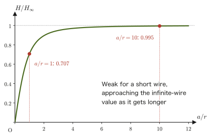
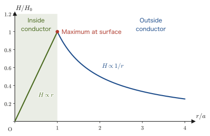
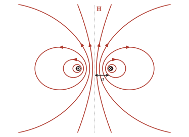
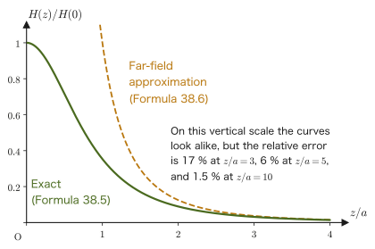

Chapter 38Sources of the Magnetic Field — The Biot–Savart Law and Ampère's Law
When a compass needle is brought close to a wire carrying an electric current, the needle swings—this was the first decisive evidence linking electricity and magnetism, discovered in 1820 by the Danish physicist Ørsted. Prompted by this discovery, the French physicists Biot and Savart carried out a series of precise experiments and established a formula that tells us “which part of a current produces how much magnetic field at which point in space.” In high school physics you probably learned three formulas as things to memorize: “the magnetic field around a straight current is $H=I/(2\pi r)$,” “the magnetic field at the center of a circular current is $H=I/(2r)$,” and “the magnetic field inside a solenoid (coil) is $H=nI$.” In this chapter we confirm, without skipping a single line of any calculation, that these formulas can be derived from a single empirical formula, the Biot–Savart law, together with one more law that emerges from it.
The outline of this chapter is as follows. We first define the magnetic force, the magnetic field, the magnetic flux density, and the magnetic flux (Sections 38.1–38.2), and integrate the Biot–Savart law to find the magnetic fields of a straight current and a circular current (Sections 38.3–38.4). Next we introduce Ampère's law, discovered by the Frenchman Ampère—when the magnetic field is integrated once around a closed path encircling a current, the value does not depend on the shape of the path and equals the total current passing through the path (Section 38.5). In highly symmetric situations (an infinitely long solenoid, a ring-shaped toroid, a thick wire), this law gives the magnetic field far more easily than the Biot–Savart integral does. Furthermore, using Stokes's theorem, which we learned in the companion volume “University Mathematics” (AD 02), we obtain the differential form $\rot\bm B=\mu_0\bm j$, which holds at each point. This equation becomes one of Maxwell's equations, which unify electromagnetism in Chapter 42. Finally, we examine the behavior of a circular current viewed from far away as a magnetic dipole (Section 38.6), and see that a bar magnet can be understood as a collection of tiny circular currents, and how this relates to familiar magnetic phenomena such as compass needles, the Earth's magnetic field, MRI machines, and the magnetic recording of hard disks.
- The magnetic force between magnetic charges (pole strengths) $m\ [\mathrm{Wb}]$, the definitions of the magnetic field $\bm H$, the magnetic flux density $\bm B=\mu\bm H$, and the magnetic flux $\Phi$, and the relations among their units
- Using the Biot–Savart law $\dd\bm H=\dfrac{1}{4\pi r^2}\left(I\,\dd\bm\ell\times\dfrac{\bm r}{r}\right)$, derive by integration the magnetic field of an infinitely long straight current, that of a finite straight current, and that at the center of a circular current (we also find the magnetic flux through a coil next to a straight current)
- Derive the magnetic field inside a solenoid, $H=nI$, using Ampère's law, and understand why the magnetic field outside is $0$
- Learn to use Ampère's law in both its integral form $\displaystyle\oint_C\bm H\cdot\dd\bm\ell=I_{\text{enc}}$ (the line integral of the magnetic field once around a closed path $C$; explained in Section 38.4) and its differential form $\rot\bm B=\mu_0\bm j$ obtained with Stokes's theorem (University Mathematics, Chapter 20), and find the magnetic fields of a thick wire and a toroid
- Derive $\operatorname{div}\bm B=0$ (isolated magnetic poles do not exist) from the fact that magnetic field lines are closed and from the divergence theorem
- Find the magnetic field on the axis of a circular current, define the magnetic dipole moment $\bm m=I\bm S$, and confirm that the far magnetic field has the same $1/z^3$ form as the far electric field of an electric dipole (including applications to a finite solenoid and the Earth's magnetic field)
Source notes: Yasuhide Mochizuki, Physics Notes: Electromagnetism, pp. 17–20.
38.1 Magnetic Force, Magnetic Field, and Magnetic Flux Density
In the high school physics unit on “current and magnetic field,” you probably learned as formulas the strength of the magnetic field around a straight current, $H=I/(2\pi r)$, the magnetic field inside a solenoid, $H=nI$, and the relation to the magnetic flux density, $B=\mu H$ ($\mu$: permeability). However, the definitions themselves—what kind of quantity the magnetic field $H$ and the magnetic flux density $B$ actually represent, and how $H$ and $B$ differ—are not treated in much depth in high school. In this section, we organize the system of magnetic quantities in the same way as in Chapter 35 and Chapter 36, which dealt with the electric field and the electric potential—that is, we first define a “force,” next define the “field” as the capacity to exert that force, and finally define the “magnetic flux density,” which connects that field to the response of matter.
Let us start with a familiar phenomenon. When iron filings are brought near a bar magnet, the filings gather and stick at the two ends of the magnet. These two ends are called magnetic poles; the side of a compass needle that points north is called the N pole, and the side that points south is called the S pole. When two bar magnets are brought close together, an N pole and an S pole attract each other, while two N poles or two S poles repel each other (Figure 38.1). Even if a magnet is cut in the middle, we do not obtain a magnet with only an N pole and a magnet with only an S pole; instead, new poles appear at the cut, and two small magnets, each with an N pole and an S pole, result.
Electric charges come in two kinds, positive and negative; like charges repel each other and unlike charges attract each other (Coulomb's law, Chapter 35). You have also confirmed in high school experiments that magnets have two kinds of “poles,” N and S, that like poles repel each other, and that unlike poles attract each other. Following the analogy with electric charge, therefore, we introduce the magnetic charge (magnetic quantity) $m\ [\mathrm{Wb}]$ (weber, symbol Wb) as a quantity expressing the strength of a magnetic pole, and regard an N pole as a positive magnetic charge and an S pole as a negative one. This does not mean that “particles that carry only magnetic charge (magnetic monopoles)” exist, in the way electrons and protons carry electric charge—no such particle has ever been found in any experiment so far. The magnetic charge $m$ is merely a convenient quantity, modeled on electric charge, for quantifying “the ability of one end of a magnet to exert a magnetic force” (we will confirm this point rigorously again after learning $\operatorname{div}\bm B=0$ in Section 38.5).
Definition 38.1: Magnetic force
When two magnetic charges (magnetic quantities) $m_1,m_2\ [\mathrm{Wb}]$ are placed a distance $r\ [\mathrm{m}]$ apart, the force acting between them is called the magnetic force, and its magnitude is
\begin{equation} |\bm F|=\frac{1}{4\pi\mu}\cdot\frac{|m_1m_2|}{r^2} \label{eq:38-mag-force} \end{equation}Here $\mu\ [\mathrm{N/A^2}]$ is a constant specific to the substance (medium) in which the two magnetic charges are placed, and is called the permeability. Moreover,
$$ m_1m_2\lt 0\ \text{means an attractive force,}\qquad m_1m_2\gt 0\ \text{means a repulsive force} $$With the convention of regarding an N pole as positive and an S pole as negative, this agrees with the experimental fact you confirmed in high school: “unlike poles, such as an N pole and an S pole (opposite signs, $m_1m_2\lt0$), attract each other, and like poles, such as two N poles or two S poles (the same sign, $m_1m_2\gt0$), repel each other.”
Intuition: Electric and magnetic fields are very similar
Eq. \eqref{eq:38-mag-force} has exactly the same form as Coulomb's law $|\bm F|=\dfrac{1}{4\pi\varepsilon}\dfrac{|q_1q_2|}{r^2}$ (Law 35.1 with the vacuum permittivity $\varepsilon_0$ replaced by the permittivity $\varepsilon$ of a general medium) under the replacements $q\leftrightarrow m$, $\varepsilon\leftrightarrow\mu$. In this way, electrostatics and magnetostatics are mathematically very similar in structure. The magnetic field $\bm H$, the magnetic flux density $\bm B$, and the magnetic flux $\Phi$ that we define in this chapter likewise correspond to the electric field $\bm E$, the electric displacement (electric flux density) $\bm D$, and the electric flux (the flux of the electric displacement), respectively (Table 38.1 below), so it helps to understand them with the discussion of Chapter 35 as a foundation. There are, however, limits to this analogy—an electric charge can exist stably by itself (only positive or only negative), whereas a magnetic charge always appears as a pair of N and S poles, and an isolated magnetic charge cannot be extracted. The mathematical expression of this difference is $\operatorname{div}\bm B=0$, which we learn in Section 38.5.
| Electrostatics | Magnetostatics | Units |
|---|---|---|
| Electric charge $q$ | Magnetic charge $m$ | $\mathrm{C}$ and $\mathrm{Wb}$ |
| Permittivity $\varepsilon$ | Permeability $\mu$ | $\mathrm{F/m}$ and $\mathrm{N/A^2}$ |
| Electric field $\bm E=\bm F/q$ | Magnetic field $\bm H=\bm F/m$ | $\mathrm{V/m}$ and $\mathrm{A/m}$ |
| Electric displacement $\bm D=\varepsilon\bm E$ (in vacuum, $\bm D=\varepsilon_0\bm E$) | Magnetic flux density $\bm B=\mu\bm H$ | $\mathrm{C/m^2}$ and $\mathrm{Wb/m^2}=\mathrm{T}$ |
However, this correspondence is only an apparent similarity in a static magnetic field with magnetic charge as a hypothetical source. The fundamental field that determines the force on a moving charge (the Lorentz force $\bm F=q\bm v\times\bm B$) is $\bm B$, and as far as force is concerned, $\bm B$ plays the role of the electric field $\bm E$ (Chapter 39). Do not memorize Table 38.1 by rote as saying that “$\bm H$ corresponds to $\bm E$ and $\bm B$ corresponds to $\bm D$.”
Definition 38.2: Magnetic field
In a space where a magnetic force acts on a magnetic charge, we consider that a magnetic field exists. At the position where a magnetic force $\bm F\ [\mathrm{N}]$ acts on a magnetic charge $m\ [\mathrm{Wb}]$, we define the magnetic field $\bm H$ by
\begin{equation} \bm H=\frac{\bm F}{m} \qquad\left(\text{that is,}\ \ \bm F=m\bm H\right) \label{eq:38-mag-field} \end{equation}The magnetic field $\bm H$ can be understood as being equal to the force that acts when a unit magnetic charge ($m=1\ \mathrm{Wb}$) is placed at that location (exactly the same idea as the electric field $\bm E=\bm F/q$, Definition 35.1).
Combining Eq. \eqref{eq:38-mag-force} and Eq. \eqref{eq:38-mag-field}, the magnitude of the magnetic field produced by a magnetic charge $m_1$ at a point a distance $r$ away can be written as
$$ H=\frac{|\bm F|}{m_2}=\frac{1}{4\pi\mu}\cdot\frac{m_1}{r^2} $$(For $m_1\gt0$, the direction is away from $m_1$.) Here too, this form has exactly the same structure as the electric field of a point charge, $E=\dfrac{1}{4\pi\varepsilon}\dfrac{q}{r^2}$.
Definition 38.3: Magnetic flux density
Using the magnetic field $\bm H$ and the permeability $\mu$ of the material in which the magnetic field exists, we define the magnetic flux density $\bm B$ by
\begin{equation} \bm B=\mu\bm H \qquad[\mathrm{Wb/m^2}] \label{eq:38-flux-density} \end{equation}$\bm B$ is a vector quantity expressing the density and direction of the magnetic flux lines (discussed later). If you learned the “magnetic flux density $B$” in high school physics in the unit tesla $[\mathrm{T}]$, then $1\ \mathrm{T}=1\ \mathrm{Wb/m^2}$, and it refers to the same quantity.
Intuition: What is permeability?
The permeability $\mu$ has a different value for each material. As Eq. \eqref{eq:38-flux-density} shows, even under the same magnetic field $\bm H$, the larger the permeability $\mu$ of a material, the larger the magnetic flux density $\bm B$. This means that the larger the permeability of a material, the greater the number of magnetic flux lines passing through its interior (the material “passes” magnetic flux more easily). Ferromagnets such as iron and nickel have permeabilities far larger than that of vacuum, and this is one of the reasons they are used as the iron cores (magnetic materials) of electromagnets and motors.
Let us use Eqs. \eqref{eq:38-mag-force}, \eqref{eq:38-mag-field}, and \eqref{eq:38-flux-density} to check the relations among the units of the various quantities. First, the magnetic field produced by a magnetic charge $m$ at a point a distance $r$ away was $H=\dfrac{m}{4\pi\mu r^2}$. Applying $B=\mu H$ to this, the permeability $\mu$ cancels, and we obtain
$$ B=\mu H=\frac{m}{4\pi r^2} $$The right-hand side is “the magnetic charge $[\mathrm{Wb}]$ divided by the surface area $4\pi r^2\ [\mathrm{m^2}]$ of a sphere of radius $r$,” so the unit of $B$ is $[\mathrm{Wb/m^2}]$ (this is why we wrote the unit as $[\mathrm{Wb/m^2}]$ in Definition 38.3). On the other hand, the unit of $\mu$ is $[\mathrm{N/A^2}]$, and the unit of $H$ is $[\mathrm{N/Wb}]$ by Definition 38.2 ($H=F/m$). Therefore, the relation among the units in $B=\mu H$ is
$$ \left[\frac{\mathrm{Wb}}{\mathrm{m}^2}\right]=[\mu]\times[H]=\frac{\mathrm{N}}{\mathrm{A}^2}\times\frac{\mathrm{N}}{\mathrm{Wb}} $$Multiplying both sides of this equation by $[\mathrm{Wb}]$ to clear the denominator, we obtain
$$ \frac{\mathrm{Wb}^2}{\mathrm{m}^2}=\frac{\mathrm{N}^2}{\mathrm{A}^2} \qquad\therefore\ \mathrm{Wb}^2=\frac{\mathrm{N}^2\,\mathrm{m}^2}{\mathrm{A}^2} $$and taking the square root of both sides gives
\begin{equation} [\mathrm{Wb}]=\left[\frac{\mathrm{N\,m}}{\mathrm{A}}\right]=\left[\frac{\mathrm{J}}{\mathrm{A}}\right] \label{eq:38-unit-check} \end{equation}(where we used the fact that $\mathrm{N\,m}=\mathrm{J}$, the joule, the unit of work and energy). That is, the unit of magnetic charge, the weber, has the same dimension as “energy divided by current.” Using this result, the unit of the magnetic field $H$ can also be rewritten:
$$ [H]=\left[\frac{\mathrm{N}}{\mathrm{Wb}}\right]=\left[\frac{\mathrm{N}}{\mathrm{N\,m}/\mathrm{A}}\right]=\left[\frac{\mathrm{A}}{\mathrm{m}}\right] $$which agrees with $[\mathrm{A/m}]$, the unit used for the magnetic field (magnetic field strength) in many textbooks. The formulas for the magnetic field produced by a straight current or a solenoid that we derive from now on ($H=I/(2\pi r)$, $H=nI$, etc.) take the form of a current $[\mathrm{A}]$ divided by a length $[\mathrm{m}]$—that is, a form whose unit is $[\mathrm{A/m}]$—thanks to this correspondence of units.
Caution: The difference between $\mu$ (general permeability) and $\mu_0$ (vacuum permeability)
In Definitions 38.1–38.3 of this section, we used the permeability $\mu$ characteristic of the material in which the magnetic charges are placed. From Section 38.2 onward, however, when we treat the magnetic fields produced by currents, we consider, unless otherwise stated, the case in which the surroundings of the wire are vacuum (or air, whose permeability is almost the same as that of vacuum), and we use the vacuum permeability $\mu_0=1.256\,637\,062\,12\times10^{-6}\ \mathrm{N/A^2}$ as the permeability. The permeability of a material is written $\mu=\mu_0\mu_{\mathrm r}$ ($\mu_{\mathrm r}$ is the relative permeability, which can be as large as several hundred to several tens of thousands for iron and similar materials), and magnetic fields in matter are treated afresh in Chapter 41. Moreover, the model of magnetic charge $m$ is not the starting point of the modern understanding that currents produce magnetic fields; it is a tool for organizing magnetic quantities by analogy with electric charge. The magnetic field around a magnet is also understood to be produced, in fact, by tiny currents (the motion of electrons) (Section 38.6).
Example 38.1: Force between magnetic poles, and the magnetic field and magnetic flux density
A magnetic pole of magnetic charge $m_1=5.0\times10^{-5}\ \mathrm{Wb}$ is placed in vacuum (permeability $\mu_0=1.256\,637\,062\,12\times10^{-6}\ \mathrm{N/A^2}$). Find the magnetic field $H$ and the magnetic flux density $B$ at a point $r=0.020\ \mathrm{m}$ away from this pole. Also, when a magnetic pole of magnetic charge $m_2=-3.0\times10^{-5}\ \mathrm{Wb}$ is placed at that point, find the magnitude of the force that acts on it, and answer whether that force is attractive or repulsive.
Solution. By the formula $H=m_1/(4\pi\mu_0r^2)$ obtained by combining Definitions 38.1 and 38.2, the magnetic field is
$$ H=\frac{m_1}{4\pi\mu_0r^2}=\frac{5.0\times10^{-5}}{4\pi\times1.256\,637\times10^{-6}\times(0.020)^2}\approx7.92\times10^{3}\ \mathrm{A/m} $$By Definition 38.3 ($B=\mu_0H$), the magnetic flux density is
$$ B=\mu_0H\approx1.256\,637\times10^{-6}\times7.92\times10^{3}\approx9.95\times10^{-3}\ \mathrm{T} $$By Eq. \eqref{eq:38-mag-force}, the magnitude of the force is
$$ |F|=\frac{|m_1m_2|}{4\pi\mu_0r^2}=\frac{(5.0\times10^{-5})\times(3.0\times10^{-5})}{4\pi\times1.256\,637\times10^{-6}\times(0.020)^2}\approx0.237\ \mathrm{N} $$Since $m_1m_2=(5.0\times10^{-5})\times(-3.0\times10^{-5})\lt0$, the force is attractive by Definition 38.1. Note that the magnetic flux density can also be written as $B=\mu_0H=m_1/(4\pi r^2)$, which puts it in a form independent of $\mu_0$ ($H$ is proportional to $1/\mu_0$ and $B$ is $\mu_0$ times it, so the $\mu_0$ factors cancel; see the discussion of units above).
38.2 Magnetic Flux and the Biot–Savart Law
For the electric field, by using the number of electric field lines (the electric flux), we obtained a powerful tool called Gauss's law (Chapter 35). For the magnetic field as well, we define in the same way a quantity that counts the “number of magnetic flux lines.”
Definition 38.4: Magnetic flux
In a region of space where the magnetic flux density $\bm B$ is distributed, take an oriented surface $S$ (unit normal vector $\bm n$). We define the magnetic flux $\Phi\ [\mathrm{Wb}]$ through this surface by
\begin{equation} \Phi=\iint_S\bm B\cdot\bm n\,\dd S \label{eq:38-flux} \end{equation}This is the magnetic counterpart of the electric flux (the flux $\iint_S\bm D\cdot\bm n\,\dd S$ of the electric displacement $\bm D$; Section 35.4), and it is a quantity representing the number of magnetic flux lines (magnetic field lines) passing through the surface $S$. When we study electromagnetic induction in Chapter 40, we will find that the unit of magnetic flux, $\mathrm{Wb}$, can also be expressed as $1\ \mathrm{Wb}=1\ \mathrm{V\,s}$. From this definition we see that the fact that the unit of the magnetic flux density $\bm B$ was $[\mathrm{Wb/m^2}]$ meant precisely the “number of magnetic flux lines per unit area.”
Now, what produces the magnetic field $\bm H$ and the magnetic flux density $\bm B$ in the first place? We can understand intuitively that the N and S poles of a permanent magnet produce them, but there is also a way to produce a magnetic field without using a magnet—namely, an electric current. In 1820, the Danish physicist Ørsted discovered that a compass needle placed near a wire carrying a current is deflected. This was the moment at which the fact that a current produces a magnetic field around it was first demonstrated experimentally. Inspired by this discovery, Biot and Savart in France carried out repeated experiments to measure precisely the magnetic field around a wire carrying a current, and discovered an empirical formula giving the infinitesimal magnetic field that a small piece of the current (the current element) produces at an arbitrary point in space. This is the Biot–Savart law.
The current element is the vector $I\dd\bm\ell$ (its direction is that of the current) representing the portion of infinitesimal length $\dd\ell$ on a wire carrying a current $I\ [\mathrm{A}]$. Let $\bm r$ (of magnitude $r=|\bm r|$) be the position vector from the current element to the observation point, and let $\theta$ be the angle between $\dd\bm\ell$ and $\bm r$ (Figure 38.2). The unit vector $\bm r/r$ in the direction of $\bm r$ is also written $\hat{\bm r}$ (the same as the unit vector $\bm e_r$ in the radial direction used in other chapters).
Math Tool: Magnitude of the cross product (vector product)
The cross product (vector product) $\bm A\times\bm B$ of two vectors $\bm A,\bm B$ is the vector whose magnitude is $|\bm A\times\bm B|=|\bm A||\bm B|\sin\theta$ ($\theta$ is the angle formed by $\bm A,\bm B$) and whose direction is perpendicular to both of $\bm A,\bm B$, following the right-hand rule (University Mathematics, Section 15.3). Using this property, the magnitude of the cross product of the current element $I\dd\bm\ell$ and the unit vector $\bm r/r$ pointing toward the observation point is given by
$$ \left|I\dd\bm\ell\times\frac{\bm r}{r}\right|=I\cdot\frac{r}{r}\cdot\dd\ell\cdot\sin\theta=I\sin\theta\,\dd\ell \qquad\left(\because\ |\bm A\times\bm B|=|\bm A||\bm B|\sin\theta,\ \left|\frac{\bm r}{r}\right|=1\right) $$This is the origin of the $\sin\theta$ that appears in the formula for the magnitude in the Biot–Savart law below.
Law 38.1: Biot–Savart law
The infinitesimal magnetic field $\dd\bm H$ that a current element $I\dd\bm\ell$ on a wire carrying a current $I$ produces at the point displaced from it by the position vector $\bm r$ (of magnitude $r$, pointing from the current element) is given by
\begin{equation} \dd\bm H=\frac{1}{4\pi r^2}\left(I\dd\bm\ell\times\frac{\bm r}{r}\right) \label{eq:38-biot-savart} \end{equation}(this is the Biot–Savart law). Using the result of the “Math Tool” above, its magnitude can be written as
\begin{equation} \dd H=|\dd\bm H|=\frac{I\sin\theta}{4\pi r^2}\,\dd\ell \label{eq:38-biot-savart-mag} \end{equation}Here $\theta$ is the angle between $\dd\bm\ell$ and $\bm r$. In vacuum, applying $\bm B=\mu_0\bm H$ to write this in terms of the magnetic flux density gives the form $\dd\bm B=\dfrac{\mu_0}{4\pi}\,\dfrac{I\,\dd\bm\ell\times\hat{\bm r}}{r^2}$, which is familiar even from high school textbooks. Checking units, $I\,\dd\ell/r^2$ has units $\mathrm{A\cdot m/m^2}=\mathrm{A/m}$, which agrees with the unit of the magnetic field $H$. The magnetic field produced by the whole wire is found by adding up (integrating) the contributions $\dd\bm H$ from all the current elements on the wire. With this law, the relation between current and magnetic field becomes clear as a mathematical formula, and the formulas for the magnetic fields produced by currents of various shapes—straight currents, circular currents, solenoids, and so on—can all be derived from this single formula.
Intuition: The direction of $\dd\bm H$ is determined by the “right-handed screw”
The direction of the cross product $\dd\bm\ell\times\bm r$ in Eq. \eqref{eq:38-biot-savart} is the direction in which a right-handed screw advances when turned from the direction of $\dd\bm\ell$ to the direction of $\bm r$ (through the smaller angle). In Figure 38.2, $\dd\bm\ell$ points upward and $\bm r$ points rightward (and slightly upward), so the screw turns clockwise and advances into the page. This restates, in the language of vectors, the same rule as the right-hand rule of high school physics (Figure 38.3), according to which the magnetic field around a straight current points in “the direction in which the screw turns when the direction in which the right-handed screw advances is taken as the direction of the current.”
When the current is spread over the whole cross section of the wire, we use, instead of the current element $I\dd\bm\ell$, the current $\bm j\,\dd V$ flowing through an infinitesimal volume $\dd V$ ($\bm j$ is the current density; Section 37.2), and write $\dd\bm H=\dfrac{1}{4\pi r^2}\left(\bm j\times\dfrac{\bm r}{r}\right)\dd V$. When the wire is thin, $\bm j\,\dd V=I\,\dd\bm\ell$ (if $S$ is the cross-sectional area of the thin wire, then $j=I/S$ and $\dd V=S\,\dd\ell$, so $j\,\dd V=(I/S)(S\,\dd\ell)=I\,\dd\ell$).
Intuition: The difference between the Biot–Savart law and Coulomb's law
Coulomb's law (Chapter 35) is a formula for the electric field produced by a “point,” namely a point charge. The Biot–Savart law, in contrast, is a formula for the magnetic field produced by a current element, an “infinitesimal line segment with a direction,” and because it involves a cross product, it is geometrically more complicated than Coulomb's law. Moreover, an isolated current element cannot be taken out by itself (a current always flows through a connected wire), so the Biot–Savart law cannot be used alone; it must always be combined with an integral over the whole wire (which we actually carry out from Section 38.3 onward).
Example 38.2: Direct calculation with the Biot–Savart law
Find the magnitude $\dd H$ of the infinitesimal magnetic field at a point located at a distance $r=0.20\ \mathrm{m}$ from a current element of length $\dd\ell=2.0\times10^{-3}\ \mathrm{m}$ on a wire carrying a current $I=10\ \mathrm{A}$, at which the angle with $\dd\bm\ell$ is $\theta=30^\circ$.
Solution. Substituting the numerical values into Eq. \eqref{eq:38-biot-savart-mag} gives
$$ \dd H=\frac{I\sin\theta}{4\pi r^2}\,\dd\ell=\frac{10\times\sin30^\circ}{4\pi\times(0.20)^2}\times(2.0\times10^{-3})=\frac{10\times0.5}{4\pi\times0.04}\times(2.0\times10^{-3})\approx1.99\times10^{-2}\ \mathrm{A/m} $$Note that this is only the contribution from a single current element. To find the magnetic field produced by the whole wire, we must integrate this $\dd H$ over all the current elements on the wire—actually doing so is the content of the following sections.
38.3 The Magnetic Field of a Straight Current
Let us apply the Biot–Savart law to its most basic case—a sufficiently long straight wire. We derive the formula $H=I/(2\pi r)$ learned in high school physics without skipping a single line.
Take a coordinate $x$ along the wire, and find the magnetic field at a point P at perpendicular distance $r$ from the wire. Let the foot of the perpendicular dropped from P to the wire be the origin O, and at the position $x$ from O (directly above O in the figure) take a small interval $\dd x$ (a current element; the direction of the current is the direction in which $x$ increases) (Figure 38.4).
Note the change in how the letters are used. In Law 38.1, $r$ was “the distance from the current element to the observation point” and $\theta$ was “the angle between $\dd\bm\ell$ and $\bm r$.” In this section, we use $r$ for “the perpendicular distance from the wire to P” (a constant that does not change during the integration). We therefore write $R$ for the distance from the current element to P, and $\alpha$ for the angle between $\dd\bm\ell$ (the direction of the current) and the position vector pointing from the current element to P. The pair $(r,\theta)$ of Law 38.1 corresponds to the pair $(R,\alpha)$ of this section.
Let $\theta$ be the angle, as seen from P, between the perpendicular PO and the line from P to the current element. From the relations in the right triangle, $R=\dfrac{r}{\cos\theta}$, and also $x=r\tan\theta$. On the other hand, at the position of the current element, the angle $\alpha$ between the direction of the current ($\dd\bm\ell$, the positive direction of the $x$ axis) and the position vector from the current element to P is a right angle plus $\theta$: $\alpha=\theta+\dfrac{\pi}{2}$ (this can be checked from the fact that when $\theta=0$, that is, when the current element is directly beside P, $\dd\bm\ell\perp\bm r$ and the angle is exactly $\pi/2$. For current elements below O, we adopt the convention $\theta\lt0$).
Derivation: The magnetic field of an infinitely long straight current
The magnitude of the small magnetic field that the current element $I\,\dd x$ produces at the point P is, reading $(r,\theta,\dd\ell)$ in the Biot–Savart law (Eq. \eqref{eq:38-biot-savart-mag}) as $(R,\alpha,\dd x)$, $\dd H=\dfrac{I\sin\alpha}{4\pi R^2}\,\dd x$. Substituting $R=\dfrac{r}{\cos\theta}$ and $\alpha=\theta+\dfrac{\pi}{2}$ here, we obtain
$$ \dd H=\frac{I\sin\!\left(\theta+\dfrac{\pi}{2}\right)}{4\pi\left(\dfrac{r}{\cos\theta}\right)^2}\,\dd x $$Here we use the property of the trigonometric functions $\sin\!\left(\theta+\dfrac{\pi}{2}\right)=\cos\theta$ (this can be confirmed from the relation that the phases of $\sin,\cos$ are shifted by $\pi/2$ from each other, or from the addition formula $\sin(\theta+\pi/2)=\sin\theta\cos(\pi/2)+\cos\theta\sin(\pi/2)=\cos\theta$), and further simplify the denominator $\left(\dfrac{r}{\cos\theta}\right)^2=\dfrac{r^2}{\cos^2\theta}$, to obtain
\begin{equation} \dd H=\frac{I\cos\theta}{4\pi\cdot\dfrac{r^2}{\cos^2\theta}}\,\dd x=\frac{I\cos^3\theta}{4\pi r^2}\,\dd x \label{eq:38-straight-dH} \end{equation}(We multiplied the numerator and denominator by $\cos^2\theta$ and simplified.) Integrating this over the entire wire (from $x=-\infty$ to $x=\infty$) gives the total magnetic field:
\begin{equation} H=\int_{-\infty}^{\infty}\dd H=\int_{-\infty}^{\infty}\frac{I\cos^3\theta}{4\pi r^2}\,\dd x \label{eq:38-straight-integral1} \end{equation}Since the integrand is written in terms of both $\theta$ and $x$, it cannot be integrated as it stands. We therefore carry out an integration by substitution that unifies the variable to $\theta$ (the calculation can also be done by unifying to $x$ and using $\cos\theta=r/\sqrt{r^2+x^2}$, but unifying to $\theta$ is shorter). From Figure 38.4, $x=r\tan\theta$ (exactly the same form as the integration by substitution of type $x=a\tan\theta$ learned in University Mathematics, Section 5.1), so differentiating both sides with respect to $\theta$, we have
\begin{equation} \dd x=\frac{r}{\cos^2\theta}\,\dd\theta \label{eq:38-straight-sub} \end{equation}(Here $\dfrac{\dd}{\dd\theta}(r\tan\theta)=\dfrac{r}{\cos^2\theta}$ can be confirmed from the quotient rule for the derivative of $\tan\theta=\sin\theta/\cos\theta$.) The limits of integration must also be converted from $x$ to $\theta$. Since the wire is infinitely long, as $x\to-\infty$ the angle $\theta$ in the figure approaches $-\dfrac{\pi}{2}$ (the direction looking “far below” along the wire), and as $x\to\infty$ we have $\theta\to\dfrac{\pi}{2}$. Therefore, Eq. \eqref{eq:38-straight-integral1} can be rewritten as
$$ H=\int_{-\frac{\pi}{2}}^{\frac{\pi}{2}}\frac{I}{4\pi r^2}\cos^3\theta\cdot\frac{r}{\cos^2\theta}\,\dd\theta =\int_{-\frac{\pi}{2}}^{\frac{\pi}{2}}\frac{I}{4\pi r}\cos\theta\,\dd\theta $$(Note that $\cos^3\theta\times\dfrac{1}{\cos^2\theta}=\cos\theta$, and that $r^2$ and $r$ cancel, leaving $1/r$.) This integral can be evaluated by elementary means, giving
$$ \int_{-\frac{\pi}{2}}^{\frac{\pi}{2}}\frac{I}{4\pi r}\cos\theta\,\dd\theta =\frac{I}{4\pi r}\Bigl[\sin\theta\Bigr]_{-\frac{\pi}{2}}^{\frac{\pi}{2}} =\frac{I}{4\pi r}\left\{\sin\frac{\pi}{2}-\sin\!\left(-\frac{\pi}{2}\right)\right\} =\frac{I}{4\pi r}\{1-(-1)\}=\frac{I}{2\pi r} $$(We used $\sin(\pi/2)=1$, $\sin(-\pi/2)=-\sin(\pi/2)=-1$, and the property of odd functions.) Therefore,
\begin{equation} H=\frac{I}{2\pi r} \label{eq:38-straight-result} \end{equation}∎
Formula 38.1: The magnetic field of an infinitely long straight current
When a current $I$ flows in a sufficiently long straight wire, the magnitude of the magnetic field at a point at perpendicular distance $r$ from the wire is
\begin{equation} H=\frac{I}{2\pi r} \label{eq:38-straight-formula} \end{equation}The direction follows the right-hand rule and is tangential to the circle centered on the current (Figure 38.3). In vacuum, the magnetic flux density is $B=\mu_0H=\dfrac{\mu_0I}{2\pi r}$. Dimensional check: the unit of the right-hand side $I/r$ is $\mathrm{A/m}$, which agrees with the unit of the magnetic field $H$.
Intuition: Why is the magnetic field inversely proportional to the distance, and what does “infinitely long” mean?
Since the magnetic field lines are concentric circles centered on the wire, the magnitude of the magnetic field is constant along the entire circumference $2\pi r$ of a circle of radius $r$, and when Formula 38.1 is rewritten as $H\times2\pi r=I$, it takes the form “the magnetic field multiplied by the length of the circumference equals the current passing through the inside.” Note that although the magnetic field produced by a single current element weakens as the inverse square of the distance (Law 38.1), for a straight current it weakens only gradually, as $1/r$; this is because all the distant current elements are also added up. Although each distant element is weak individually, there are many of them, so the total decreases more gently than $1/r^2$, by one power. The electric field produced by an infinitely long line charge is also proportional to $1/r$ for the same reason (the exercise in Section 35.7). This is the simplest case of Ampère's law, which we study next in Section 38.5. Also, the coefficient $\dfrac{\mu_0}{2\pi}\approx2\times10^{-7}\ \mathrm{N/A^2}$ in $B=\dfrac{\mu_0I}{2\pi r}=2\times10^{-7}\dfrac{I}{r}\ [\mathrm{T}]$, which you memorized in high school physics, is nothing other than Formula 38.1 with $B=\mu_0H$ substituted. Here, “infinitely long” means that the length of the wire is sufficiently larger than the distance $r$ to the point at which the magnetic field is sought. How long is long enough is examined in the next subsection, 38.3.1, “The magnetic field of a wire of finite length (a realistic wire).”
Example 38.3: The magnetic field of an infinitely long straight current (numerical)
When a current $I=5.0\ \mathrm{A}$ flows in a sufficiently long straight wire, find the magnetic field $H$ and the magnetic flux density $B$ (in vacuum) at the point $r=2.0\ \mathrm{cm}=0.020\ \mathrm{m}$ from the wire.
Solution. From Formula 38.1,
$$ H=\frac{I}{2\pi r}=\frac{5.0}{2\pi\times0.020}\approx39.8\ \mathrm{A/m} $$The magnetic flux density is
$$ B=\mu_0H=1.256\,637\times10^{-6}\times39.8\approx5.00\times10^{-5}\ \mathrm{T}\ (=50\ \mu\mathrm{T}) $$Incidentally, the magnitude of the geomagnetic flux density is about $25$–$65\ \mu\mathrm{T}$, depending on the location, so even a current of $5.0\ \mathrm{A}$ produces a magnetic field comparable to the geomagnetic field at a distance of $2.0\ \mathrm{cm}$ from the wire. This is why the needle of a compass placed near a current is deflected (Ørsted's experiment).
38.3.1 The magnetic field of a wire of finite length (a realistic wire)
Formula 38.1 holds under the idealization that the wire is “infinitely long.” Since a real wire always has ends, let us also find the magnetic field produced by a wire of finite length. Let the length of the wire be $2a$, and suppose that the observation point P is directly beside the midpoint of the wire, at distance $r$ from the wire (that is, the foot O of the perpendicular dropped from P to the wire is the midpoint of the wire, and the wire extends a length $a$ up and down, symmetrically about O; Figure 38.5).
Derivation: The magnetic field of a wire of finite length
Since the geometric setup is exactly the same as in the infinitely long case, the small magnetic field produced by a current element is also, as in Eq. \eqref{eq:38-straight-dH},
$$ \dd H=\frac{I\sin\!\left(\theta+\dfrac{\pi}{2}\right)}{4\pi\left(\dfrac{r}{\cos\theta}\right)^2}\,\dd x=\frac{I\cos^3\theta}{4\pi r^2}\,\dd x $$The only difference is the interval of integration; this time we integrate between the ends of the wire ($x=-a$ to $x=a$):
$$ H=\int_{-a}^{a}\dd H=\int_{-a}^{a}\frac{I\cos^3\theta}{4\pi r^2}\,\dd x $$Using the same substitution as in the infinitely long case, $x=r\tan\theta$ and $\dd x=\dfrac{r}{\cos^2\theta}\,\dd\theta$ (Eq. \eqref{eq:38-straight-sub}), the limits of integration become $\theta=\tan^{-1}\!\left(-\dfrac{a}{r}\right)=-\tan^{-1}\dfrac{a}{r}$ for $x=-a$ ($\tan^{-1}$ is an odd function) and $\theta=\tan^{-1}\dfrac{a}{r}$ for $x=a$. Therefore,
$$ H=\int_{-\tan^{-1}\frac{a}{r}}^{\tan^{-1}\frac{a}{r}}\frac{I}{4\pi r^2}\cos^3\theta\cdot\frac{r}{\cos^2\theta}\,\dd\theta =\int_{-\tan^{-1}\frac{a}{r}}^{\tan^{-1}\frac{a}{r}}\frac{I}{4\pi r}\cos\theta\,\dd\theta $$ $$ =\frac{I}{4\pi r}\left\{\sin\!\left(\tan^{-1}\frac{a}{r}\right)-\sin\!\left(-\tan^{-1}\frac{a}{r}\right)\right\} =\frac{I}{4\pi r}\cdot2\sin\!\left(\tan^{-1}\frac{a}{r}\right) $$(Using the fact that $\sin$ is an odd function, we rewrote the value at $-\tan^{-1}(a/r)$ as $-\sin(\tan^{-1}(a/r))$.) That is,
\begin{equation} H=\frac{I}{2\pi r}\sin\!\left(\tan^{-1}\frac{a}{r}\right) \label{eq:38-finite-result} \end{equation}∎
Formula 38.2: The magnetic field of a straight current of finite length
When a current $I$ flows in a straight wire of length $2a$ (with its two ends at the symmetric positions $\pm a$ as seen from the foot of the perpendicular from the observation point), the magnitude of the magnetic field at a point at perpendicular distance $r$ from the wire is
\begin{equation} H=\frac{I}{2\pi r}\sin\!\left(\tan^{-1}\frac{a}{r}\right) \label{eq:38-finite-formula} \end{equation}Using the identity $\sin(\tan^{-1}x)=x/\sqrt{1+x^2}$ (which can be confirmed by considering a right triangle with opposite side $x$, adjacent side $1$, and hypotenuse $\sqrt{1+x^2}$), we can also write $\sin\!\left(\tan^{-1}\dfrac{a}{r}\right)=\dfrac{a}{\sqrt{a^2+r^2}}$, so Formula 38.2 can also be rewritten in a form that contains no inverse tangent:
$$ H=\frac{Ia}{2\pi r\sqrt{a^2+r^2}} $$As $a\to\infty$ (the limit in which the wire becomes endlessly long), $\tan^{-1}(a/r)\to\pi/2$ and $\sin(\tan^{-1}(a/r))\to1$, so Formula 38.2 agrees with Formula 38.1 ($H=I/(2\pi r)$)—the finite-length formula is a more general formula that contains the infinite-length formula as a special case.
When the ends of the wire are placed asymmetrically with respect to the point directly beside P (the foot O of the perpendicular), with the lower end at $x=x_1$ and the upper end at $x=x_2$, the only change is that the interval of integration runs from $\theta_1=\tan^{-1}(x_1/r)$ to $\theta_2=\tan^{-1}(x_2/r)$, so the same calculation gives
\begin{equation} H=\frac{I}{4\pi r}\int_{\theta_1}^{\theta_2}\cos\theta\,\dd\theta=\frac{I}{4\pi r}\left(\sin\theta_2-\sin\theta_1\right) \label{eq:38-finite-general} \end{equation}(Setting $\theta_2=-\theta_1=\tan^{-1}(a/r)$ returns Formula 38.2.) The magnetic field of a circuit with bent wires can be found by applying this equation to each straight segment and adding the results (Exercises 38.2 and 38.3).
Illustration 38.1: Magnetic field produced by a wire of length $2\sqrt3\ \mathrm{m}$
Let us find the magnetic field at a point at perpendicular distance $r=1.0\ \mathrm{m}$ from the midpoint of a wire of length $2\sqrt3\approx3.5\ \mathrm{m}$ carrying a current $I$.
Substituting the half-length $a=\sqrt3\ \mathrm m$ into Formula 38.2 gives, for general $r$, $H=\dfrac{I}{2\pi r}\sin\!\left(\tan^{-1}\dfrac{\sqrt3}{r}\right)$. Since $\sin\lt1$, this is slightly weaker than the magnetic field $I/(2\pi r)$ produced by an infinitely long wire. Substituting $r=1.0\ \mathrm m$, we obtain
$$ H=\frac{I}{2\pi\times1.0}\sin\!\left(\tan^{-1}\sqrt3\right) $$Here $\tan^{-1}\sqrt3=\dfrac{\pi}{3}$ ($60^\circ$; this follows because, in the right triangle obtained by halving an equilateral triangle, the angle whose opposite side is $\sqrt3$ and whose adjacent side is $1$ is $60^\circ$), and $\sin\dfrac{\pi}{3}=\dfrac{\sqrt3}{2}$. Therefore, we have
$$ H=\frac{I}{2\pi}\cdot\frac{\sqrt3}{2}=\frac{\sqrt3}{4\pi}I $$On the other hand, at the same $r=1.0\ \mathrm{m}$ the magnetic field of an infinitely long wire is, by Formula 38.1, $H_\infty=I/(2\pi)$. Taking the ratio gives
$$ \frac{H}{H_\infty}=\sin\!\left(\tan^{-1}\sqrt3\right)=\frac{\sqrt3}{2}\approx0.866 $$Thus the magnetic field produced by the finite wire is slightly weaker than that produced by an infinitely long wire ($\tan^{-1}\sqrt3=\pi/3$, $\sin(\pi/3)=\sqrt3/2$). Because the magnetic field that the part beyond the ends (the part of the infinitely long wire that is missing from the wire of length $2\sqrt3\ \mathrm{m}$) would have produced is not added, the shorter the wire, the weaker the magnetic field is compared with the infinite case.
Example 38.4: Magnetic field of a finite wire and the infinite-length limit
A current $I=8.0\ \mathrm{A}$ flows through a straight wire of length $1.0\ \mathrm{m}$ (half-length $a=0.50\ \mathrm{m}$). Find the magnetic field $H$ at a point at perpendicular distance $r=0.050\ \mathrm{m}$ from the midpoint of the wire, and compare it with the magnetic field of an infinitely long wire at the same $r$.
Solution. By Formula 38.2,
$$ H=\frac{I}{2\pi r}\sin\!\left(\tan^{-1}\frac{a}{r}\right)=\frac{8.0}{2\pi\times0.050}\sin\!\left(\tan^{-1}\frac{0.50}{0.050}\right)=\frac{8.0}{2\pi\times0.050}\sin(\tan^{-1}10) $$Since $\tan^{-1}10\approx84.3^\circ$ and $\sin(84.3^\circ)\approx0.9950$,
$$ H\approx25.5\times0.9950\approx25.3\ \mathrm{A/m} $$For an infinitely long wire, on the other hand, Formula 38.1 gives
$$ H_\infty=\frac{I}{2\pi r}=\frac{8.0}{2\pi\times0.050}\approx25.5\ \mathrm{A/m} $$The ratio is $H/H_\infty\approx0.995$ ($99.5\ \%$). When the half-length of the wire, $a=0.50\ \mathrm{m}$, is as much as 10 times the distance to the observation point, $r=0.050\ \mathrm{m}$, the finite length makes a difference of only about $0.5\ \%$. This is because the ends of the wire are so far from the observation point that they look “almost infinitely far away.”
Figure 38.6 plots this ratio $H/H_\infty=\sin\left(\tan^{-1}\dfrac{a}{r}\right)=\dfrac{a}{\sqrt{a^2+r^2}}$ as a function of $a/r$. At $a/r=1$ (the half-length of the wire equals the distance) it is $0.707$, but it reaches $99\ \%$ at $a/r=7$ and $99.9\ \%$ at $a/r=22$. When high school physics speaks of a “sufficiently long wire,” “sufficiently long” means a length of about this order.

Example 38.5: Magnetic flux through a rectangular coil near a straight current
A current $I=10\ \mathrm{A}$ flows through an infinitely long straight wire. A rectangular coil, whose sides parallel to the wire have length $\ell=0.20\ \mathrm{m}$ and whose sides perpendicular to the wire have length $w=0.10\ \mathrm{m}$, is placed in the same plane as the wire so that its nearer side is at a distance $d=0.050\ \mathrm{m}$ from the wire (Figure 38.7). In vacuum, find the magnetic flux $\Phi$ through this coil.
Solution. By Formula 38.1 and $B=\mu_0H$, the magnetic flux density at a point at distance $r$ from the wire is $B(r)=\dfrac{\mu_0I}{2\pi r}$, and its direction is perpendicular to the plane of the coil (into the page in Figure 38.7). If we take the normal vector $\bm n$ of the plane of the coil to point into the page, then $\bm B\cdot\bm n=B(r)$. Since $B$ varies with $r$, we cannot evaluate the definition of magnetic flux, Eq. \eqref{eq:38-flux}, simply as “$B\times$ area,” as we would for a uniform magnetic field. We therefore consider a thin strip of width $\dd r$ and length $\ell$ lying between distances $r$ and $r+\dd r$ from the wire. The area of this strip is $\dd S=\ell\,\dd r$, and since we may regard $B$ as constant ($=B(r)$) within the strip, the flux through the strip is given by
$$ \dd\Phi=B(r)\,\dd S=\frac{\mu_0I}{2\pi r}\,\ell\,\dd r $$Since the coil is made up of strips from $r=d$ to $r=d+w$, adding all of them up (integrating) gives
$$ \Phi=\int_{d}^{d+w}\frac{\mu_0I\ell}{2\pi r}\,\dd r=\frac{\mu_0I\ell}{2\pi}\Bigl[\ln r\Bigr]_{d}^{d+w}=\frac{\mu_0I\ell}{2\pi}\ln\frac{d+w}{d} $$(We used $\displaystyle\int\dfrac{\dd r}{r}=\ln r$ and $\ln(d+w)-\ln d=\ln\dfrac{d+w}{d}$.) Now we substitute numerical values. Since $\dfrac{\mu_0}{2\pi}=2.0\times10^{-7}\ \mathrm{N/A^2}$, $\dfrac{d+w}{d}=\dfrac{0.15}{0.050}=3$, and $\ln3=1.0986$, the flux is
$$ \Phi=(2.0\times10^{-7})\times10\times0.20\times\ln3=4.0\times10^{-7}\times1.0986\approx4.4\times10^{-7}\ \mathrm{Wb} $$Unit check: $[\mu_0I\ell]=\dfrac{\mathrm N}{\mathrm A^2}\cdot\mathrm A\cdot\mathrm m=\dfrac{\mathrm N\,\mathrm m}{\mathrm A}=\mathrm{Wb}$ (Eq. \eqref{eq:38-unit-check}), which agrees with the unit of magnetic flux. The magnetic flux density at the nearer side of the coil is $B(d)=\dfrac{\mu_0I}{2\pi d}=4.0\times10^{-5}\ \mathrm T$, and at the farther side it is $B(d+w)=1.3\times10^{-5}\ \mathrm T$; the average over the whole coil, $\Phi/(\ell w)=2.2\times10^{-5}\ \mathrm T$, lies between these two values. If we vary the current $I$ in this wire, the flux $\Phi$ changes and an electromotive force (emf) is induced in the coil. This is the electromagnetic induction that we study in Chapter 40.
38.4 The Magnetic Fields of a Circular Current and a Solenoid
Next, we find the magnetic field produced at the center when a wire is bent into a ring (a circular loop). You will also have learned this in high school physics as the formula $H=I/(2r)$.
To find the magnetic field at the center, we add up the contributions from all the current elements $I\,\dd x$ on the loop ($\dd x$ is the length of a small arc along the circumference) (Figure 38.9). At the center of a circular loop, for every current element the direction of the current element (the tangential direction of the circle) and the direction of the position vector from the current element to the center (the radial direction of the circle) always meet at a right angle—because the tangent and the radius are perpendicular at every point on the circumference. Therefore the angle $\theta$ in the Biot–Savart law (Eq. \eqref{eq:38-biot-savart-mag}) is $\theta=90^\circ$ for every current element.
Derivation: The magnetic field at the center of a circular current
When a current $I$ flows in a circular loop of radius $r$, the magnitude of the small magnetic field produced at the center by the current element $I\,\dd x$ on the circumference is obtained by substituting $\theta=90^\circ$ ($\sin90^\circ=1$) into the Biot–Savart law (Eq. \eqref{eq:38-biot-savart-mag}):
\begin{equation} \dd H=\frac{I}{4\pi r^2}\sin90^\circ\cdot\dd x=\frac{I}{4\pi r^2}\,\dd x \label{eq:38-circular-dH} \end{equation}For all the current elements on the circumference (let $C$ denote the circular closed path), the distance from the center is the same, $r$, so the magnitude of $\dd H$ is the same for every current element, and its direction (perpendicular to the page) is also the same for all of them. Therefore we can simply add up the $\dd H$ as scalars. If we express the arc length $x$ along the circumference as $x=r\theta'$ using the central angle $\theta'$ (from $0$ to $2\pi$), then $\dd x=r\,\dd\theta'$ (this is nothing but the relation arc length = radius × central angle). Integrating over one full turn of the circle gives
$$ \oint_C\dd x=\int_0^{2\pi}r\,\dd\theta'=r\bigl[\theta'\bigr]_0^{2\pi}=r(2\pi-0)=2\pi r $$(this is just the familiar formula that the full circumference of a circle of radius $r$ is $2\pi r$, rewritten in integral form). Using this, the result of integrating $\dd H$ over one full turn of the circle is
\begin{equation} H=\oint_C\dd H=\oint_C\frac{I}{4\pi r^2}\,\dd x=\int_0^{2\pi}\frac{I}{4\pi r^2}\cdot r\,\dd\theta'=\int_0^{2\pi}\frac{I}{4\pi r}\,\dd\theta' \label{eq:38-circular-loop-integral} \end{equation}Since $I/(4\pi r)$ is a constant independent of $\theta'$, the integral simply amounts to multiplying by $2\pi$, so
\begin{equation} H=\frac{I}{4\pi r}\times2\pi=\frac{I}{2r} \label{eq:38-circular-result} \end{equation}∎
Formula 38.3: The magnetic field at the center of a circular current
When a current $I$ flows in a circular loop of radius $r$, the magnitude of the magnetic field at its center is
\begin{equation} H=\frac{I}{2r} \label{eq:38-circular-formula} \end{equation}Its direction follows the right-hand rule: it is the direction in which the thumb points when the fingers of the right hand are curled in the direction of the current (perpendicular to the plane of the loop). Dimensional check: the unit of the right-hand side $I/r$ is $\mathrm{A/m}$.
Discussion: How is a circular current made to flow?
A naive question arises here. If we made the wire into a “perfectly closed circle,” where would we connect the battery? How, in the first place, could we apply a voltage? In practice, the circular loop is cut open slightly, and two wires are extended from the two ends of the gap and connected to a battery. If the two wires are placed very close to each other (so that currents in opposite directions flow close together), the magnetic fields they produce nearly cancel at a distance, so a magnetic field close to that produced by an ideal circular current is obtained. Moreover, if we make a coil of $N$ turns, the contributions from the individual turns add up, and the magnetic field at the center becomes $N$ times as large, $H=NI/(2r)$ (rather than increasing the current, increasing the number of turns allows us to obtain a stronger magnetic field with a smaller current).
There are also ways to keep a circular current flowing without connecting a battery. Once a current is made to flow in a ring of superconductor, whose resistance is $0$, the current continues to flow (effectively) forever without a battery (a persistent current). Also, as we will learn in Chapter 40, changing a magnetic field makes an induced current flow in the ring. Furthermore, on the microscopic scale, the orbital motion of an electron in an atom corresponds exactly to a tiny circular current (Section 38.6).
Example 38.6: An independent derivation of the magnetic field at the center of a circular current
Derive Formula 38.3 ($H=I/(2r)$) again by a method different from the derivation in the text (the method using the arc length $\dd x=r\,\dd\theta'$)—a method in which the current element and the position vector are expressed concretely in Cartesian components and the cross product is computed in components.
Solution. The position vector of the point at angle $\phi$ ($0\le\phi\lt2\pi$) on a circle of radius $a$ is $\bm q(\phi)=a(\cos\phi,\sin\phi,0)$. Suppose the current flows counterclockwise along this circle. Then the direction of the current element (the unit vector in the tangential direction of the circle) is $\bm t(\phi)=(-\sin\phi,\cos\phi,0)$, obtained by differentiating $\bm q$ with respect to $\phi$ and dividing by its magnitude $a$. The current element can be written as $I\dd\bm\ell=Ia\,\dd\phi\,\bm t(\phi)$ (the arc length $\dd x=a\,\dd\phi$ multiplied by the current $I$ and the direction $\bm t$). The unit vector pointing toward the center (the origin) is opposite to the direction of $\bm q$, so $\hat{\bm r}(\phi)=-(\cos\phi,\sin\phi,0)$. By the Biot–Savart law (Eq. \eqref{eq:38-biot-savart}),
$$ \dd\bm H=\frac{1}{4\pi a^2}\left(Ia\,\dd\phi\,\bm t(\phi)\times\hat{\bm r}(\phi)\right)=\frac{I\,\dd\phi}{4\pi a}\bigl(\bm t(\phi)\times\hat{\bm r}(\phi)\bigr) $$Computing the cross product in components, only the $z$ component of $\bm t\times\hat{\bm r}=(-\sin\phi,\cos\phi,0)\times(-\cos\phi,-\sin\phi,0)$ survives (the $x,y$ components both vanish; use the definition of the cross product, $(A_1,A_2,0)\times(B_1,B_2,0)=(0,0,A_1B_2-A_2B_1)$):
$$ (\bm t\times\hat{\bm r})_z=(-\sin\phi)(-\sin\phi)-(\cos\phi)(-\cos\phi)=\sin^2\phi+\cos^2\phi=1 $$(We used the trigonometric identity $\sin^2\phi+\cos^2\phi=1$. This is precisely a check, by component calculation, of the fact used in the text that “the tangent and the radius meet at a right angle ($\theta=90^\circ$, $\sin90^\circ=1$)”.) Hence the $z$ component of $\dd\bm H$ is constant, independent of $\phi$, and
$$ H_z=\int_0^{2\pi}\frac{I}{4\pi a}\,\dd\phi=\frac{I}{4\pi a}\times2\pi=\frac{I}{2a} $$which agrees exactly with the result in the text (Formula 38.3 if we rewrite $r\to a$). The method of integrating over the arc length and the method of integrating with Cartesian components look different on the surface, but they merely use the same geometric fact (the perpendicularity of the tangent and the radius) in different forms.
38.4.1 The magnetic field of a solenoid
A wire wound densely, as if many circular loops were stacked, is called a solenoid (or coil). (Hereafter, the number of turns per unit length is denoted by the lightface $n$. This is a different quantity from the unit normal vector $\bm n$ (boldface) of a surface.) It is known that a uniform magnetic field is produced inside a sufficiently long solenoid. To find it, we use as a clue the formula for a straight current that we obtained earlier, $H=I/(2\pi r)$ (Formula 38.1).
Math Tool: The line integral along a closed path
Divide a curve $C$ into small segments $\dd\bm\ell$ and, for each segment, form “the component of the magnetic field along the segment $\times$ the length of the segment,” that is, $\bm H\cdot\dd\bm\ell=H\cos\theta\,\dd\ell$ ($\theta$ is the angle between $\bm H$ and $\dd\bm\ell$). The limit $\Delta\ell\to0$ of the sum of these, $\sum H_{\text{tangential}}\Delta\ell$, is the line integral $\int_C\bm H\cdot\dd\bm\ell$. When $C$ is closed, we put a circle on the integral sign and write $\oint_C\bm H\cdot\dd\bm\ell$, which we call an “integral once around the path.” In particular, (i) if $\bm H$ is parallel to the tangent of the path ($\theta=0$) and has constant magnitude, the result is $H\times(\text{total length of the path})$, and (ii) if $\bm H$ is perpendicular to the path ($\theta=90^\circ$), then $\bm H\cdot\dd\bm\ell=0$ and the contribution is $0$ (University Mathematics, Section 20.2).
Intuition: What do we learn from integrating the magnetic field once around a path?
In the situation where Formula 38.1 holds, consider a circle of radius $r$ centered on the current (a closed path $C$ that encloses the current), and take the line integral of the magnetic field $\bm H$ once around this path. Everywhere on this path, the magnitude of $\bm H$ is constant, $H=I/(2\pi r)$, and its direction coincides with the tangential direction of the path (the tangential direction of the circle). Therefore,
$$ \oint_C\bm H\cdot\dd\bm\ell=H\times(\text{total length of the path})=\frac{I}{2\pi r}\times2\pi r=I $$Thus the result of the line integral is determined only by the current $I$ enclosed by the path, regardless of the radius $r$ of the path. This is no coincidence: it is in fact a special case of a general law satisfied by the magnetic field produced by currents—Ampère's law, which we treat in the next section. Here we accept this fact (when the magnetic field is integrated once around an appropriate path enclosing the current, the result equals the current enclosed by that path, $\displaystyle\oint_C\bm H\cdot\dd\bm\ell=I$; if we denote the unit tangent vector at each point of the path by $\bm t$ and write $\dd\bm\ell=\bm t\,\dd\ell$, this can also be written $\displaystyle\oint_C\bm H\cdot\bm t\,\dd\ell=I$) and use it to find the magnetic field of a solenoid. Why this relation holds regardless of the shape of the path (the proof for the case of a straight current), and its rewriting in differential form, will be taken up again in Section 38.5.
Consider a cross section of the solenoid, and let $n\ [\mathrm{1/m}]$ be the number of turns per unit length (the turn density of the coil; if $N$ turns are wound over the total length $L$, then $n=N/L$). A segment of length $\ell$ contains $n\ell$ turns, so it includes the cross sections of $n\ell$ wires (each carrying the current $I$). As in Figure 38.11, choose a rectangular path (route) $A\to B\to C\to D\to A$. Side $DA$ (of length $\ell$) runs through the inside of the solenoid parallel to the axis, and side $BC$ (of length $\ell$) runs outside the windings. Sides $AB$ and $CD$ pass between the windings and connect the inside with the outside.
Derivation: Magnetic field inside a solenoid
Take the line integral of the magnetic field once around the rectangular path $A\to B\to C\to D\to A$, examining one side at a time. On sides $AB$ and $CD$, in the part that passes through the inside, the magnetic field (parallel to the axis) and the direction of the path (perpendicular to the axis) are orthogonal, so $\bm H\cdot\dd\bm\ell=0$; in the part that passes through the outside the magnetic field is nearly $0$; so in both cases the contribution is $0$. Side $BC$ runs through the outside, where the magnetic field can be regarded as $0$, so its contribution is $0$ (the reason the external field is nearly $0$ is checked in the “Discussion” below). What remains is only side $DA$ (of length $\ell$), which runs through the inside of the solenoid parallel to the magnetic field $\bm H$ (in the same direction as the field), and its contribution is $H\ell$. Therefore,
\begin{equation} \underbrace{0}_{AB}+\underbrace{0}_{BC}+\underbrace{0}_{CD}+\underbrace{H\ell}_{DA}=n\ell I \label{eq:38-solenoid-ampere} \end{equation}Here the right-hand side is the total current enclosed by the path. Within the path (the cross section of the solenoid), $n\ell$ turns of winding pass through the segment of length $\ell$, and each carries the current $I$, so the path encloses a total current of $n\ell I$. Solving Eq. \eqref{eq:38-solenoid-ampere} for $H$, we obtain
\begin{equation} H\ell=n\ell I \qquad\therefore\ H=nI \label{eq:38-solenoid-result} \end{equation}∎
Discussion: Why choose this rectangular path?
Ampère's law holds for any closed path. Even so, there is a reason for choosing the rectangle of Figure 38.11. To actually compute the line integral $\oint_C\bm H\cdot\dd\bm\ell$, we must know the magnitude and direction of $\bm H$ at every point of the path. All that we know here (or, as we check in the next discussion, may assume) is only that “inside, the field is uniform and parallel to the axis; outside, it is $\bm 0$.” So we built the path from just three kinds of pieces: (i) a side $DA$ parallel to the field ($\bm H\cdot\dd\bm\ell=H\,\dd\ell$, so $H$ comes out of the integral and gives $H\ell$), (ii) parts perpendicular to the field ($\bm H\cdot\dd\bm\ell=0$), and (iii) a side that passes through a region where the field is $0$. In this way the unknown $H$ that we want to find appears only from side $DA$, and the line integral becomes a product, “$H$ times the length.” Moreover, this path encloses the current of $n\ell$ wires. If we chose, for example, a circular path, the field would cross the path obliquely and the line integral could not be computed. Just as we chose a “highly symmetric closed surface” in Gauss's law, the trick to finding the magnetic field with Ampère's law is to choose a path along which the field is everywhere either “constant,” “perpendicular,” or “$0$.”
Discussion: Why can the magnetic field outside a solenoid be regarded as $0$?
If the solenoid is sufficiently long in the axial direction, the situation does not change no matter how far we shift it along the axis or how far we rotate it about the axis. Therefore we may assume that the magnitude of the field is determined only by the distance $s$ from the axis and that its direction is parallel to the axis (the absence of a component perpendicular to the axis can be checked by the argument using the divergence theorem in Section 38.5). Now consider a rectangular path whose sides $DA$ and $BC$ both lie outside the solenoid, at distances $s_1,s_2$ from the axis, respectively. This path encloses none of the windings ($I_{\text{enc}}=0$), so by Ampère's law
$$ H(s_1)\,\ell-H(s_2)\,\ell=0\qquad\therefore\ H(s_1)=H(s_2) $$(the signs are opposite because the directions of the path along the two sides are opposite). The field is equal at any two points outside; that is, the external magnetic field is constant, independent of the distance from the axis. But at points infinitely far from the axis the field must be $0$, so this constant value must be $0$. A real solenoid has a finite length, so the field lines emerge from one end, loop around the outside, and return to the opposite end (Figure 38.10). However, the space outside is very large, so the density of field lines is low, and the field is much weaker than inside. The longer and more densely wound the solenoid, the better this approximation.
Intuition: A solenoid is the same as a bar magnet
Recall that a solenoid is a row of circular coils lined up along the axis with no gaps between them. Each circular current behaves like a small magnet (Section 38.6), so when they are packed closely together, the whole produces a field like that of a bar magnet. In Figure 38.10, the left end, from which the field lines emerge, corresponds to the N pole, and the right end, where they enter, corresponds to the S pole. The field lines have no starting point or end point anywhere; they are closed curves that pass through the inside of the coil and return to themselves—that is, this is a magnetic field with no “sources” ($\operatorname{div}\bm B=0$ of Section 38.5). Inside a bar magnet, too, the field lines run continuously from the S pole to the N pole, and they close by returning from the N pole to the S pole outside.
Formula 38.4: Magnetic field inside a solenoid
When a current $I$ flows through a solenoid with $n\ [\mathrm{1/m}]$ turns per unit length (if $N$ turns are wound over the total length $L$, then $n=N/L$), a uniform magnetic field parallel to the axis
\begin{equation} H=nI \label{eq:38-solenoid-formula} \end{equation}is produced inside the solenoid. The magnetic flux density in vacuum is $B=\mu_0nI$. Dimensional check: it is the product of $n\ [\mathrm{1/m}]$ and $I\ [\mathrm A]$, so its unit is $\mathrm{A/m}$. This formula is an approximation that neglects end effects, valid when the solenoid is sufficiently long (its length is much greater than its radius).
Example 38.7: Magnetic field of a solenoid (numerical)
A current $I=2.0\ \mathrm{A}$ flows through a sufficiently long solenoid with a turn density (turns per unit length) of $n=1000\ \mathrm{turns/m}$. Find the magnetic field $H$ and the magnetic flux density $B$ (in vacuum) inside the solenoid.
Solution. By Formula 38.4,
$$ H=nI=1000\times2.0=2.0\times10^{3}\ \mathrm{A/m} $$ $$ B=\mu_0H=1.256\,637\times10^{-6}\times2.0\times10^{3}\approx2.51\times10^{-3}\ \mathrm{T} $$These are the required values. In familiar electromagnets and in the main-field coils of MRI scanners, a far larger turn density, current, and permeability (from an iron core, for example) are combined to produce strong magnetic fields.
38.5 Ampère's Law — Integral and Differential Forms
In the previous section, we confirmed for a straight current the fact that “integrating the magnetic field once around a path that encloses a current gives the current enclosed by the path,” and we also used it (without proof) in the calculation for the solenoid. This fact is in truth a general law that holds regardless of the shape of the wire or the shape of the path. In this section we introduce it formally, confirm for the straight-current case that it does not depend on the shape of the path, and then use Stokes's theorem, which we learned in the companion volume “University Mathematics” (AD 02), to rewrite it in a differential form that holds at each point.
Law 38.2: Ampère's law (integral form)
Take an arbitrary closed curve $C$ in the space where current is distributed. Let $S$ be a surface bounded by $C$ (its orientation being matched to the orientation of $C$ by the right-hand rule), and let $I_{\text{enc}}$ (the enclosed current, that is, the current that $C$ “encloses”) be the total current passing through $S$. Then the value of the line integral of the magnetic field $\bm H$ once around $C$ is
\begin{equation} \oint_C\bm H\cdot\dd\bm\ell=I_{\text{enc}} \label{eq:38-ampere-integral} \end{equation}This is Ampère's law (integral form). It is a general law that holds regardless of the shape of $C$ and of how the current enclosed by $C$ is distributed.
Why does the shape of the path not matter (the case of a straight current)?
Take an infinitely long straight current $I$ along the $z$ axis, let $s$ be the distance from the $z$ axis, and let $\phi$ be the azimuthal angle around the $z$ axis. By Formula 38.1, the magnetic field has magnitude $H=\dfrac{I}{2\pi s}$ and points in the direction of increasing azimuthal angle (the unit vector $\bm e_\phi$). Of an infinitesimal displacement $\dd\bm\ell$ along the path, the magnitude of the component in the $\bm e_\phi$ direction equals the length $s\,\dd\phi$ of the arc traced out by turning through $\dd\phi$ around the axis, and the other components (the radial and axial directions) are perpendicular to $\bm H$, so they do not contribute to $\bm H\cdot\dd\bm\ell$. Therefore, whatever the shape of the path,
$$ \bm H\cdot\dd\bm\ell=\frac{I}{2\pi s}\cdot s\,\dd\phi=\frac{I}{2\pi}\,\dd\phi $$holds. The distance $s$ cancels, and only the change $\dd\phi$ of the azimuthal angle remains. If the closed curve $C$ encircles the wire exactly once in the same sense, then $\phi$ changes from $0$ to $2\pi$, so $\oint_C\dd\phi=2\pi$ and $\oint_C\bm H\cdot\dd\bm\ell=\dfrac{I}{2\pi}\cdot2\pi=I$. For a closed curve that does not encircle the wire, $\phi$ may increase and decrease but in the end returns to its original value, so $\oint_C\dd\phi=0$ and the integral is $0$ (going once around the wire in the opposite direction gives $-I$). When there are several currents, the magnetic field is the superposition (sum) of the fields produced by the individual currents, so $\oint_C\bm H\cdot\dd\bm\ell$ is the algebraic sum of the currents enclosed by $C$. For a general current distribution, it is known that $\rot\bm H=\bm j$ can be derived from the Biot–Savart law itself (omitted here); together with the derivation of the differential form below, this shows that Law 38.2 holds in general.
Intuition: Consistency with the straight-current case
As derived in Section 38.3, if we take as the path $C$ a circle of radius $r$ centered on an infinitely long straight current, then $\bm H$ has constant magnitude on the path and is directed along the tangent of the path, so $\displaystyle\oint_C\bm H\cdot\dd\bm\ell=H\times2\pi r=\dfrac{I}{2\pi r}\times2\pi r=I=I_{\text{enc}}$, in agreement with Eq. \eqref{eq:38-ampere-integral}. Likewise, for the rectangular path of the solenoid (Figure 38.11), $\displaystyle\oint_C\bm H\cdot\dd\bm\ell=H\ell=n\ell I=I_{\text{enc}}$, which again agrees. Conversely, if we know from symmetry that “the magnetic field has constant magnitude along a circle centered on the wire and is directed along the tangent,” then Law 38.2 gives $H\times2\pi r=I$, that is, $H=I/(2\pi r)$, so Formula 38.1 is obtained without carrying out the Biot–Savart integral (in agreement with the result of the integral in Section 38.3). Ampère's law is a more fundamental law that unifies the results of such individual highly symmetric cases—conversely, only when the symmetry is high and $\bm H$ can be regarded as constant on the path can the value of $H$ be found directly from Eq. \eqref{eq:38-ampere-integral} (the same situation as for Gauss's law, which could give the electric field directly only for highly symmetric charge distributions; Chapter 35).
Let us write the right-hand side $I_{\text{enc}}$ of Eq. \eqref{eq:38-ampere-integral} in a little more detail. When the current is distributed continuously in space, the vector quantity that describes how it is distributed is called the current density $\bm j\ [\mathrm{A/m^2}]$ (its magnitude is the current flowing per unit area perpendicular to the direction of the current, and its direction is the direction of the current; we study it in detail in Chapter 37, which deals with steady currents). The total current passing through the surface $S$ can be written as the surface integral of the current density (a quantity of the same form as the electric flux $\Phi=\iint_S\bm D\cdot\bm n\,\dd S$ and the magnetic flux $\Phi=\iint_S\bm B\cdot\bm n\,\dd S$) as follows:
$$ I_{\text{enc}}=\iint_S\bm j\cdot\bm n\,\dd S $$Therefore, Ampère's law (integral form) can be written in the form
$$ \oint_C\bm H\cdot\dd\bm\ell=\iint_S\bm j\cdot\bm n\,\dd S $$as well.
Derivation: The differential form of Ampère's law
Stokes's theorem (University Mathematics, Section 20.5) is a theorem that, for a surface $S$ bounded by a closed curve $C$, relates the line integral and the surface integral of a vector field $\bm f$ in the form
$$ \oint_C\bm f\cdot\dd\bm\ell=\iint_S(\rot\bm f)\cdot\bm n\,\dd S $$Applying this to $\bm f=\bm H$, the left-hand side of Ampère's law (integral form) can be rewritten as
$$ \oint_C\bm H\cdot\dd\bm\ell=\iint_S(\rot\bm H)\cdot\bm n\,\dd S $$On the other hand, the right-hand side has already been written as $I_{\text{enc}}=\iint_S\bm j\cdot\bm n\,\dd S$, so Ampère's law can be put in the form
$$ \iint_S(\rot\bm H)\cdot\bm n\,\dd S=\iint_S\bm j\cdot\bm n\,\dd S \qquad\text{that is}\qquad \iint_S\bigl\{(\rot\bm H)-\bm j\bigr\}\cdot\bm n\,\dd S=0 $$What is important here is that this equality holds regardless of the choice of $C$ (and hence $S$): it holds for every closed curve $C$ and every surface $S$ spanning it. Suppose that $(\rot\bm H)-\bm j\neq\bm0$ near some point. Then, if we take a sufficiently small surface $S$ that surrounds only the immediate neighborhood of that point, the surface integral $\iint_S\{(\rot\bm H)-\bm j\}\cdot\bm n\,\dd S$ should be nonzero (since we are integrating over a small region in which the integrand barely changes from a nonzero value). This contradicts the conclusion above that the surface integral is zero for every $S$. Therefore, $(\rot\bm H)-\bm j$ must be $\bm0$ at every point in space:
\begin{equation} \rot\bm H=\bm j \label{eq:38-ampere-differential-H} \end{equation}This is the differential form of Ampère's law (note that it uses the same argument as for $\operatorname{div}\bm D=\rho$, the differential form of Gauss's law, in Chapter 35—an argument that “condenses” a conclusion about arbitrary regions, drawn from an equality of surface integrals, into a local relation that holds at each point). In vacuum $\bm B=\mu_0\bm H$, so multiplying both sides by $\mu_0$ gives
\begin{equation} \rot\bm B=\mu_0\bm j \label{eq:38-ampere-differential} \end{equation}∎
Theorem 38.1: Ampère's law (differential form)
At each point of the space where the current density $\bm j$ is distributed, the magnetic field and the magnetic flux density satisfy
\begin{equation} \rot\bm H=\bm j,\qquad\rot\bm B=\mu_0\bm j\quad(\text{in vacuum}) \label{eq:38-ampere-diff-thm} \end{equation}This is a mathematically equivalent expression of Ampère's law (integral form, Law 38.2), and the two can be converted into each other by Stokes's theorem. Whereas, for the electric field, $\operatorname{div}\bm D=\rho$ (the differential form of Gauss's law) was the local relation “divergence = charge density,” this one is the local relation “curl = current density.”
$\rot\bm H$ is a vector that expresses how strongly the magnetic field swirls at each point (the strength of the vortex and the direction of the axis about which it turns) (University Mathematics, Section 19.4). Theorem 38.1 can be read as saying that “the current density $\bm j$ is the source of the vortices of the magnetic field.” This pairs with the fact that, in $\operatorname{div}\bm D=\rho$, charge was the source from which the electric field lines emanate.
Caution: Ampère's law holds when the current does not change in time (steady current)
Taking the divergence of both sides of Eq. \eqref{eq:38-ampere-differential-H}, the left-hand side becomes $\operatorname{div}(\rot\bm H)=0$ because “the divergence of a curl is $0$” (University Mathematics, Section 19.5, Theorem 19.1), so the right-hand side must also satisfy $\operatorname{div}\bm j=0$. For a steady current, $\pdiff{\rho}{t}=0$ by the conservation of charge (the continuity equation $\pdiff{\rho}{t}+\operatorname{div}\bm j=0$, Section 37.2), so indeed $\operatorname{div}\bm j=0$ and there is no contradiction. However, in a situation where charge accumulates in one place—for example, in the middle of charging a capacitor—$\pdiff{\rho}{t}\neq0$, and therefore $\operatorname{div}\bm j\neq0$, so Eq. \eqref{eq:38-ampere-differential-H} does not hold as it stands. To resolve this contradiction, Maxwell added a term called the displacement current. This is the “Ampère–Maxwell law” that we study in Section 42.1. Understand that the equations of this chapter are the equations for the case in which the current does not change in time.
Example 38.8: The magnetic field inside and outside a thick cylindrical wire
In an infinitely long cylindrical copper wire of radius $a=2.0\ \mathrm{mm}$, a current $I=20\ \mathrm A$ flows uniformly over the whole cross section (so that the current density $j$ is constant within the cross section). (1) Find the magnitude $j$ of the current density. (2) Find the magnetic field $H(r)$ at a point at distance $r$ from the axis, separately for $r\lt a$ and $r\gt a$, and compute $H$ and the magnetic flux density $B$ at $r=1.0,\ 2.0,\ 4.0\ \mathrm{mm}$ (the permeability of copper may be taken to equal the vacuum value $\mu_0$). (3) Verify that $\rot\bm H=\bm j$ holds inside the wire.
Solution. (1) The current flows uniformly over the cross-sectional area $\pi a^2$, so
$$ j=\frac{I}{\pi a^2}=\frac{20}{\pi\times(2.0\times10^{-3})^2}\approx1.6\times10^{6}\ \mathrm{A/m^2} $$(2) By symmetry, the magnetic field points along the tangent of a circle centered on the axis, and its magnitude depends only on the distance $r$ from the axis. We therefore take as the Ampère path $C$ a circle of radius $r$ centered on the axis; on the path the magnetic field has constant magnitude and is directed along the tangent, so $\displaystyle\oint_C\bm H\cdot\dd\bm\ell=H(r)\times2\pi r$. The current $I_{\text{enc}}$ enclosed by the path is the entire current in the wire, $I_{\text{enc}}=I$, for $r\gt a$ (outside the wire), while for $r\lt a$ (inside the wire) it is only the current passing through the disk of radius $r$, $I_{\text{enc}}=j\times\pi r^2=I\dfrac{r^2}{a^2}$. Therefore, by Law 38.2,
$$ H(r)=\begin{cases}\dfrac{Ir}{2\pi a^2} & (r\lt a)\\[2mm] \dfrac{I}{2\pi r} & (r\gt a)\end{cases} $$For $r\gt a$ this has the same form as Formula 38.1 for a straight current. Also, at $r=a$ both expressions give $I/(2\pi a)$, so they join smoothly at the surface (Figure 38.13). Substituting numerical values: at $r=1.0\ \mathrm{mm}$ (inside), $H=\dfrac{20\times1.0\times10^{-3}}{2\pi\times(2.0\times10^{-3})^2}\approx7.96\times10^{2}\ \mathrm{A/m}$ and $B=\mu_0H\approx1.0\times10^{-3}\ \mathrm T$; at $r=2.0\ \mathrm{mm}$ (surface), $H=\dfrac{20}{2\pi\times2.0\times10^{-3}}\approx1.59\times10^{3}\ \mathrm{A/m}$ and $B\approx2.0\times10^{-3}\ \mathrm T$; at $r=4.0\ \mathrm{mm}$ (outside), $H=\dfrac{20}{2\pi\times4.0\times10^{-3}}\approx7.96\times10^{2}\ \mathrm{A/m}$ and $B\approx1.0\times10^{-3}\ \mathrm T$.
(3) Writing the components of the interior magnetic field $\bm H$ in rectangular coordinates: it has magnitude $\dfrac{Ir}{2\pi a^2}$ and is directed along the tangent (the counterclockwise unit vector is $\dfrac{1}{r}(-y,\,x,\,0)$), so $\bm H=\dfrac{I}{2\pi a^2}(-y,\ x,\ 0)$. Therefore,
$$ (\rot\bm H)_z=\pdiff{H_y}{x}-\pdiff{H_x}{y}=\frac{I}{2\pi a^2}\bigl\{1-(-1)\bigr\}=\frac{I}{\pi a^2}=j $$(the $x,y$ components are $0$ because $H_z=0$ and $H_x,H_y$ do not depend on $z$), which agrees with the current density $\bm j$ (in the $z$ direction, with magnitude $I/(\pi a^2)$), so $\rot\bm H=\bm j$ is verified. Outside, $\bm H=\dfrac{I}{2\pi(x^2+y^2)}(-y,\ x,\ 0)$, and taking the difference of $\pdiff{}{x}\dfrac{x}{x^2+y^2}=\dfrac{y^2-x^2}{(x^2+y^2)^2}$ and $\pdiff{}{y}\dfrac{-y}{x^2+y^2}=\dfrac{y^2-x^2}{(x^2+y^2)^2}$ gives $(\rot\bm H)_z=0$, so it is also verified that $\rot\bm H=\bm 0$ outside, where there is no current.

In situations of high symmetry, Ampère's law is a powerful tool that lets us find the magnetic field without carrying out complicated Biot–Savart integrals. As another typical application, let us find the magnetic field of a toroid (a solenoid wound into a ring; a toroidal coil).
Example 38.9: The magnetic field inside and outside a toroidal coil
A current $I=3.0\ \mathrm{A}$ is passed through a toroidal coil made by winding a wire a total of $N=500$ times, without gaps, around a ring-shaped core of mean radius $r=0.10\ \mathrm{m}$. Using Ampère's law, find the magnetic field $H$ inside the coil (within the core) and outside it (outside the core, and in the “doughnut hole” region near the center).
Solution. A toroid has rotational symmetry about its axis. From this symmetry, the magnetic field $\bm H$ should have constant magnitude and point in the tangential direction along a circle (of radius $s$) centered on the central axis of the toroid (since the toroid is a solenoid bent into a ring, the field also points in the tangential direction). We therefore choose this highly symmetric circle as the Ampère path $C$.
(i) When the path, at distance $s$ from the central axis, runs through the interior of the coil's core (between the inner radius and the outer radius of the core): This path passes through the windings of the coil $N$ times (that is, through $N$ wires carrying the current $I$). Therefore $I_{\text{enc}}=NI$, and by Ampère's law (Eq. \eqref{eq:38-ampere-integral}),
$$ H\times2\pi s=NI \qquad\therefore\ H=\frac{NI}{2\pi s} $$(Inside the core, $H$ is exactly inversely proportional to $s$: it is larger at the inner circumference (small $s$) and smaller at the outer circumference. When the size of the cross section of the core is sufficiently small compared with the mean radius $r$, we may put $s$ equal to the mean radius $r$ as a representative value and write $H\approx\dfrac{NI}{2\pi r}$. This is the counterpart of $H=nI$ for a uniform solenoid: if we regard $n=N/(2\pi r)$—that is, $N$ turns are wound around the whole circumference $2\pi r$ of the ring, so the number of turns per unit length is $N/(2\pi r)$—we see that it has the same form as Formula 38.4.) Substituting the numerical values, we obtain
$$ H=\frac{NI}{2\pi r}=\frac{500\times3.0}{2\pi\times0.10}\approx2.39\times10^{3}\ \mathrm{A/m} $$ $$ B=\mu_0H\approx1.256\,637\times10^{-6}\times2.39\times10^{3}\approx3.00\times10^{-3}\ \mathrm{T} $$(ii) When the distance $s$ from the central axis puts the path on the inner side of the core (inside the hole of the doughnut) or on the outer side of the core: Counting how many times the windings pass through the surface enclosed by this path, we find that a path passing on the inner side of the core does not pass through the windings at all ($I_{\text{enc}}=0$). A path passing on the outer side of the core, because the coil forms a closed ring, passes through the windings on the outgoing side and the windings on the return side exactly the same number of times, in opposite directions, so the net enclosed current is $I_{\text{enc}}=0$. In either case, by Ampère's law, the following holds:
$$ H\times2\pi s=0 \qquad\therefore\ H=0 $$That is, the magnetic field of a toroidal coil is confined entirely to the inside of the core and does not leak at all to the outside (including the inside of the hole)—this shape achieves an even more ideal “confinement” of the magnetic field than a straight solenoid.
Application: Toroidal cores (ring-shaped iron cores), MRI, and transformers
Because almost no magnetic field leaks to the outside, toroidal coils are used in many settings in engineering and materials science, such as transformers, current transformers (CTs) for measuring current, and ferrite cores for noise suppression. If a magnetic material with a large permeability $\mu$, such as iron or ferrite, is used for the core, a stronger magnetic flux density $B=\mu H$ is obtained for the same current, and small, high-performance transformers and inductors can be built—the selection of magnetic materials is one of the important application areas of materials science. On the other hand, straight (large) solenoids are used when one wants to create a large uniform magnetic field inside, as in the main magnet coil of an MRI (magnetic resonance imaging) scanner. In both cases, Ampère's law, which we have learned in this section, is the basis of the design of actual devices.
Finally, let us check one more basic law concerning the magnetic field. In Section 38.1 we introduced the quantity called the magnetic charge (magnetic pole strength) $m$ as a convenient quantity modeled on electric charge, but as we noted then, an isolated magnetic charge (an N pole alone or an S pole alone taken out separately) has never been found in any experiment so far. If a magnet is broken in two, new N and S poles merely appear at the cut surfaces, and the result is again just two small magnets, each with an N pole and an S pole as a pair. Let us express this fact rigorously in mathematical form.
Discussion: Why do magnetic field lines have neither a starting point nor an end point?
Electric field lines start from positive charges and end on negative charges (or extend to infinity)—they have electric charges as “starting points and end points.” In contrast, for magnetic field lines there are no isolated magnetic charges to serve as such starting and end points. As can also be seen from the magnetic field lines in Figure 38.3 (straight current) and Figure 38.8 (circular current), magnetic field lines have no ends anywhere, and in the examples of this chapter every one of them is a closed curve returning to itself (for a general current configuration, a magnetic field line may fail to close and keep running on, winding around a ring-shaped surface; the essential point is that there is “no starting point and no end point”)—that is, although there are currents as “sources of rotation,” there are no “sources of outflow or inflow.”
Derivation: $\operatorname{div}\bm B=0$
Consider an arbitrary closed surface $S$ (let $V$ be the volume it encloses). The fact that magnetic field lines have neither starting points nor end points (in the examples of this chapter, all of them are closed curves) is also the experimental fact that magnetic poles are never found singly, and it can also be derived from the Biot–Savart law in the following “Advanced Topic.” This fact means that there is neither a “starting point” nor an “end point” of magnetic field lines inside $S$; that is, the number of magnetic field lines emerging from the inside of $S$ and the number of lines entering from the outside are exactly equal. Therefore the net magnetic flux through $S$ is always 0, regardless of the shape of $S$:
$$ \oint_S\bm B\cdot\bm n\,\dd S=0 $$Now, using the divergence theorem (University Mathematics, Section 20.5, the same theorem we used when we derived the differential form of Gauss's law (Chapter 35)), the left-hand side can be rewritten as
$$ \oint_S\bm B\cdot\bm n\,\dd S=\iiint_V(\operatorname{div}\bm B)\,\dd V $$Therefore $\displaystyle\iiint_V(\operatorname{div}\bm B)\,\dd V=0$ holds for every closed surface $S$ (and hence for every volume $V$). By exactly the same argument as when we derived the differential form of Ampère's law, this means that the integrand must be 0 at every point:
\begin{equation} \operatorname{div}\bm B=0 \label{eq:38-divB-zero} \end{equation}∎
Law 38.3: $\operatorname{div}\bm B=0$ (nonexistence of magnetic poles)
The magnetic flux density $\bm B$ satisfies $\operatorname{div}\bm B=0$ at every point in space. Compared with the differential form of Gauss's law for the electric field, $\operatorname{div}\bm D=\rho$ (Chapter 35), the “magnetic charge density” corresponding to the right-hand side is always 0—this expresses mathematically the fact that, whereas positive and negative electric charges can exist singly, isolated magnetic charges (magnetic monopoles) do not exist in nature. The magnetic charge $m$ introduced in Section 38.1 is merely a convenient description of a pair of N and S poles confined to a small region (a current loop) as seen from far away, and $\operatorname{div}\bm B=0$ is the fundamental law that supports this.
Advanced Topic: Deriving $\operatorname{div}\bm B=0$ directly from the Biot–Savart law (a derivation that does not use the assumption of the derivation above)
We can also show that $\operatorname{div}\bm B=0$ follows from the Biot–Savart law itself, without assuming the fact that “magnetic field lines have neither starting points nor end points.” The magnetic flux density produced by a distribution of current density $\bm j(\bm r')$ can be written, by adding up the contributions of the current elements $\bm j\,\dd V'$ (in vacuum, with $\bm B=\mu_0\bm H$; letting $\bm r$ be the observation point, $\bm r'$ the position of the current, $\bm R=\bm r-\bm r'$, and $R=\abs{\bm R}$), as
$$ \bm B(\bm r)=\frac{\mu_0}{4\pi}\iiint\frac{\bm j(\bm r')\times\bm R}{R^3}\,\dd V' $$Here, in differentiation with respect to $\bm r$ (the $\rot$ and $\operatorname{div}$), $\bm j(\bm r')$ is a function of $\bm r'$ only and so can be regarded as a constant. Using $\grad\dfrac1R=-\dfrac{\bm R}{R^3}$ ($\grad$ is the gradient, also written $\nabla(1/R)$ using $\nabla$; this can be checked by differentiating $R=\sqrt{X^2+Y^2+Z^2}$, $\bm R=(X,Y,Z)$ component by component) and $\rot(f\bm A)=(\grad f)\times\bm A+f\rot\bm A$ ($f$ is a scalar field; this is Formula 19.4 of University Mathematics, Section 19.4, and can be checked by writing it in components and applying the product rule), we obtain
$$ \rot\!\left(\frac{\bm j}{R}\right)=\grad\!\left(\frac1R\right)\times\bm j+\frac1R\rot\bm j=-\frac{\bm R}{R^3}\times\bm j+\bm 0=\frac{\bm j\times\bm R}{R^3} $$Therefore we can write $\bm B=\rot\bm A$ with $\bm A(\bm r)=\dfrac{\mu_0}{4\pi}\iiint\dfrac{\bm j(\bm r')}{R}\,\dd V'$, and so “the divergence of a curl is $0$” (University Mathematics, Theorem 19.1) gives $\operatorname{div}\bm B=\operatorname{div}(\rot\bm A)=0$. ($\bm A$ is a quantity called the vector potential, the magnetic counterpart of the electric potential $\varphi$. It is a separate quantity, unrelated to the area in Section 38.6.)
∎
Discussion: Using $\operatorname{div}\bm B=0$, we can find the direction of the magnetic field of an infinitely long solenoid
In Section 38.4 we stated that the magnetic field of an infinitely long solenoid is parallel to the axis. Let us verify this. By symmetry, each of the components of the magnetic field (in cylindrical coordinates with the axis as the $z$ axis, $s$ the distance from the axis, and $\phi$ the azimuthal angle: the axial component $H_z$, the radial component $H_s$, and the azimuthal component $H_\phi$) is a function of the distance $s$ from the axis only. (i) $H_\phi$: if we take a circle centered on the axis as the path, the current passing through this circle is $0$ (the current in the winding flows around the circumference and does not flow along the axis), so by Law 38.2, $H_\phi\cdot2\pi s=0$, that is, $H_\phi=0$. (ii) $H_s$: consider a coaxial cylindrical surface of radius $s$ and length $L$. Since $H_z$ does not depend on $z$, the magnetic fluxes through the top and bottom faces are equal in magnitude and opposite in sign and cancel each other, leaving only the flux $B_s\cdot2\pi s L$ through the side surface. By Law 38.3 (integral form, $\oint_S\bm B\cdot\bm n\,\dd S=0$), this is $0$, that is, $H_s=0$. Therefore the magnetic field has only the axial component $H_z(s)$.
38.6 The Magnetic Dipole Moment and the Far Field of a Circular Current
In Section 38.4, we found only the magnetic field at the center ($z=0$) of a circular current. Here we find the magnetic field at an arbitrary point on the central axis (a point at an axial distance $z$ from the center), and in particular examine what happens in the “far field,” where $z$ is much larger than the radius $a$ of the circular current. This is an important way of thinking for understanding compass needles, the Earth's magnetic field, magnetic recording on hard disks, and the like, that is, for understanding “how a small loop of current looks from far away.”
Derivation: Magnetic field on the axis of a circular current
Suppose that a circular loop of radius $a$ carrying current $I$ is placed in the $xy$ plane with its center at the origin, and find the magnetic field at a point $(0,0,z)$ on the axis (the $z$ axis). As in Example 38.6, the current element at the angle $\phi$ on the circumference has position vector $a(\cos\phi,\sin\phi,0)$ and direction (tangential) $\bm t(\phi)=(-\sin\phi,\cos\phi,0)$, and the current-element vector is $I\dd\bm\ell=Ia\,\dd\phi\,\bm t(\phi)$. The position vector from the current element to the observation point $(0,0,z)$ is
$$ \bm r(\phi)=(0,0,z)-a(\cos\phi,\sin\phi,0)=(-a\cos\phi,\,-a\sin\phi,\,z),\qquad r=|\bm r|=\sqrt{a^2+z^2} $$(note that every point on the circumference is at the same distance $\sqrt{a^2+z^2}$ from the observation point). The Biot–Savart law (Eq. \eqref{eq:38-biot-savart}) can be written as $\dd\bm H=\dfrac{I}{4\pi r^3}\left(\dd\bm\ell\times\bm r\right)$ (the form obtained by substituting $\bm r/r=\hat{\bm r}$ and combining $r^2\times r=r^3$), so we compute the cross product $\bm t(\phi)\times\bm r(\phi)$ in components:
$$ \bm t\times\bm r=(-\sin\phi,\cos\phi,0)\times(-a\cos\phi,-a\sin\phi,z) $$Using the component formula for the cross product, $(U_1,U_2,U_3)\times(V_1,V_2,V_3)=(U_2V_3-U_3V_2,\ U_3V_1-U_1V_3,\ U_1V_2-U_2V_1)$ (University Mathematics, Section 15.4), we obtain
$$ (\bm t\times\bm r)_x=\cos\phi\cdot z-0\cdot(-a\sin\phi)=z\cos\phi,\qquad (\bm t\times\bm r)_y=0\cdot(-a\cos\phi)-(-\sin\phi)\cdot z=z\sin\phi $$ $$ (\bm t\times\bm r)_z=(-\sin\phi)(-a\sin\phi)-(\cos\phi)(-a\cos\phi)=a\sin^2\phi+a\cos^2\phi=a $$(the $z$ component comes from exactly the same calculation as for the central field computed in Example 38.6, namely the fact that the tangent and the radial direction are perpendicular). Therefore, we obtain
$$ \dd\bm H=\frac{Ia\,\dd\phi}{4\pi r^3}(\bm t\times\bm r)=\frac{Ia\,\dd\phi}{4\pi(a^2+z^2)^{3/2}}(z\cos\phi,\ z\sin\phi,\ a) $$The $x,y$ components (the parts proportional to $z\cos\phi,\ z\sin\phi$) cancel and vanish when we integrate $\phi$ from $0$ to $2\pi$ around the circumference, because $\displaystyle\int_0^{2\pi}\cos\phi\,\dd\phi=\int_0^{2\pi}\sin\phi\,\dd\phi=0$ (the integral of $\cos,\sin$ over one full period is always zero). This corresponds to the fact that the “components perpendicular to the axis” of the magnetic fields produced by the individual current elements on the circumference cancel one another by symmetry. Only the $z$ component (the component along the axis) remains, and
\begin{equation} H(z)=\int_0^{2\pi}\frac{Ia}{4\pi(a^2+z^2)^{3/2}}\cdot a\,\dd\phi=\frac{Ia^2}{4\pi(a^2+z^2)^{3/2}}\times2\pi=\frac{Ia^2}{2(a^2+z^2)^{3/2}} \label{eq:38-onaxis-derivation} \end{equation}∎
Formula 38.5: Magnetic field on the axis of a circular current (general point)
The magnitude of the magnetic field at a point on the central axis of a circular loop of radius $a$ carrying current $I$, at a distance $z$ from the center, is
\begin{equation} H(z)=\frac{Ia^2}{2(a^2+z^2)^{3/2}} \label{eq:38-onaxis-formula} \end{equation}Its direction is along the axis (following the right-hand rule). Substituting $z=0$ (the center) gives $H(0)=\dfrac{Ia^2}{2a^3}=\dfrac{I}{2a}$, which agrees with Formula 38.3 (read with $r\to a$)—Formula 38.3 is nothing other than the special case ($z=0$) of this general formula.
Next, we consider the case in which the observation point is much farther away than the radius of the loop ($z\gg a$). In this case the denominator of Formula 38.5 becomes $(a^2+z^2)^{3/2}=z^3(1+a^2/z^2)^{3/2}\approx z^3$ (an approximation in which the $a^2/z^2$ term is neglected because $a/z\to0$), so the field can be approximated as
$$ H(z)\approx\frac{Ia^2}{2z^3}\qquad(z\gg a) $$The picture becomes clearer if we rewrite this expression using the area $S=\pi a^2$ of the circular loop.
Caution: When the same letter denotes different quantities
(1) The magnetic charge $m$ (unit $\mathrm{Wb}$) of Section 38.1 and the magnetic dipole moment $\bm m$ (unit $\mathrm{A\,m^2}$) to be defined below are entirely different quantities. (2) For the area vector we use $\bm S$ (whose magnitude $S$ is the area of the loop). The letter is the same as that of the surface $S$ used in integrals, but here it means the “area of a planar loop,” and it is also different from the vector potential $\bm A$ (Section 38.5).
Definition 38.5: Magnetic dipole moment
For a planar loop of area $S\ [\mathrm{m^2}]$ carrying a current $I\ [\mathrm{A}]$, we define the magnetic dipole moment $\bm m\ [\mathrm{A\cdot m^2}]$ by
\begin{equation} \bm m=I\bm S \label{eq:38-dipole-def} \end{equation}Here $\bm S$ is a vector whose magnitude is the area $S$ of the loop and whose direction is the direction in which the thumb points (the normal direction) when the fingers of the right hand are curled around the loop in the direction of the current. For a circular loop (radius $a$), $S=\pi a^2$, so $m=|\bm m|=I\pi a^2$.
Supplement: Two conventions for the magnetic moment
In this book, we have taken the current loop as fundamental and defined the magnetic dipole moment by $m=IS$ (unit $\mathrm{A\,m^2}$). On the other hand, in the convention based on the magnetic-charge model of Section 38.1, in which one considers a pair (a magnetic dipole) of positive and negative magnetic charges $\pm m_{\text{charge}}\ [\mathrm{Wb}]$ separated by a distance $d$, the dipole moment is defined as $p_{\mathrm m}=m_{\text{charge}}d\ [\mathrm{Wb\,m}]$. The two definitions are related by $p_{\mathrm m}=\mu_0IS$ (the units agree: $\dfrac{\mathrm N}{\mathrm A^2}\cdot\mathrm A\cdot\mathrm m^2=\mathrm{Wb\,m}$), and either one gives the same magnetic field. When the magnetic moments of electrons and atoms are discussed, they are often written in $\mathrm{A\,m^2}$ (or in $\mathrm{J/T}$, a unit that matches the energy in a magnetic field; $1\\mathrm{J/T}=1\ \mathrm{A\,m^2}$).
Using the magnitude $m=I\pi a^2$ of the magnetic dipole moment, the approximate expression for the far field becomes
$$ H(z)\approx\frac{I\times(\pi a^2)}{2\pi z^3}=\frac{m}{2\pi z^3}\qquad(z\gg a) $$In other words, it can be rewritten in this form.
Formula 38.6: Far-field magnetic field on the axis of a magnetic dipole
For a (sufficiently small) current loop with magnetic dipole moment $m$, the magnetic field at a point on the axis sufficiently far away ($z\gg$ the size of the loop) is approximated by
\begin{equation} H(z)\approx\frac{m}{2\pi z^3} \label{eq:38-dipole-farfield} \end{equation}We derived this here for a circular loop. For a small planar loop, it is known that the same formula holds regardless of its shape (circular, square, or any other), being determined only by the magnetic dipole moment $m=IS$ (this can be shown with a multipole expansion; we omit it here).
We also estimate the accuracy of the approximation. Using $\left(1+\dfrac{a^2}{z^2}\right)^{-3/2}\approx1-\dfrac{3a^2}{2z^2}$, the exact expression (Formula 38.5) can be written as $H(z)\approx\dfrac{m}{2\pi z^3}\left(1-\dfrac{3a^2}{2z^2}\right)$, so the relative error of Formula 38.6 is approximately $\dfrac32\left(\dfrac az\right)^2$ (at $z/a=3$ about $17\ \%$, at $5$ about $6\ \%$, and at $10$ about $1.5\ \%$).
Advanced Topic: Magnetic field of a magnetic dipole at points off the axis
So far we have examined only points on the axis, but at an arbitrary distant point (with position vector $\bm r$ as seen from the magnetic dipole, magnitude $r$, and $\bm e_r=\bm r/r$), the magnetic field is
\begin{equation} \bm H=\frac{1}{4\pi r^3}\Bigl[3(\bm m\cdot\bm e_r)\,\bm e_r-\bm m\Bigr] \label{eq:38-dipole-general} \end{equation}(the derivation uses a multipole expansion, so we omit it here; at the point $r=30a$ it agrees to within $0.2\ \%$ with the result of numerically integrating the magnetic field of a circular current by the Biot–Savart law). This has exactly the same form as the electric field of an electric dipole (Chapter 36, Formula 36.8), $\bm E=\dfrac{1}{4\pi\varepsilon_0r^3}\bigl[3(\bm p\cdot\bm e_r)\bm e_r-\bm p\bigr]$, with the replacements $\bm E\to\bm H$ and $\bm p/\varepsilon_0\to\bm m$. On the axis ($\bm m\parallel\bm e_r$), $\bm H=\dfrac{2\bm m}{4\pi r^3}=\dfrac{\bm m}{2\pi r^3}$, which agrees with Formula 38.6. On the equatorial plane ($\bm m\perp\bm e_r$), $\bm H=-\dfrac{\bm m}{4\pi r^3}$; that is, the magnitude is half that on the axis, and the direction is opposite to $\bm m$.

Intuition: Correspondence with the electric dipole
The electric field produced far away by an electric dipole (Section 36.8, a pair of positive and negative charges) was also, as you should recall, inversely proportional to the cube of the distance, $E\propto p/z^3$ ($p$ is the electric dipole moment). That the far field of a circular current (a magnetic dipole) has the same $1/z^3$ form is no accident: in both cases it is a manifestation of a general idea called the multipole expansion, namely that “when a source of finite size is viewed from sufficiently far away, it can be characterized by just a quantity concentrated at a single point (the electric dipole moment $p$ or the magnetic dipole moment $m$).” An electric dipole is made of a pair of positive and negative charges (a pair of a source and a sink of charge), whereas a magnetic dipole is made not of isolated magnetic charges but of a loop of current. This is precisely a consequence of $\operatorname{div}\bm B=0$ (the nonexistence of isolated magnetic charges) confirmed in Section 38.5, and it expresses the conclusion of this whole chapter: “the simplest source of a magnetic field is not a pair of magnetic charges but a loop of current.”

Example 38.10: Magnetic dipole moment and the accuracy of the far-field approximation
A current $I=4.0\ \mathrm{A}$ flows in a circular loop of radius $a=0.050\ \mathrm{m}$. (1) Find the magnetic dipole moment $m$. (2) Calculate the magnetic field at the point $z=0.50\ \mathrm{m}$ ($z/a=10$) on the axis using both Formula 38.5 (exact) and Formula 38.6 (far-field approximation), and find the relative error between the two.
Solution. (1) By Definition 38.5,
$$ m=I\pi a^2=4.0\times\pi\times(0.050)^2\approx3.14\times10^{-2}\ \mathrm{A\cdot m^2} $$(2) Substituting $z=0.50\ \mathrm{m}$ into Formula 38.5 (exact) gives
$$ H_{\text{exact}}=\frac{Ia^2}{2(a^2+z^2)^{3/2}}=\frac{4.0\times(0.050)^2}{2\times\bigl((0.050)^2+(0.50)^2\bigr)^{3/2}}\approx3.94\times10^{-2}\ \mathrm{A/m} $$With Formula 38.6 (far-field approximation),
$$ H_{\text{approx}}=\frac{m}{2\pi z^3}=\frac{3.14\times10^{-2}}{2\pi\times(0.50)^3}\approx4.00\times10^{-2}\ \mathrm{A/m} $$The relative error is
$$ \frac{|H_{\text{approx}}-H_{\text{exact}}|}{H_{\text{exact}}}\times100\approx1.5\ \% $$At a distance as large as $z/a=10$ (the distance to the observation point is 10 times the radius of the loop), the far-field approximation reproduces the exact value with an error of $2\ \%$ or less. Note that the reason the two curves appear to overlap at large $z/a$ in Figure 38.16 is also that both values are close to $0$, so that the difference is hard to see on the scale of the vertical axis. The relative error itself decreases only slowly: about $17\ \%$ at $z/a=3$, about $6\ \%$ at $5$, and about $1.5\ \%$ at $10$ (see the estimate $\tfrac32(a/z)^2$ given above).
Example 38.11: Magnetic field on the axis of a finite-length solenoid
A current $I=1.5\ \mathrm A$ flows in a solenoid of length $L=0.50\ \mathrm m$, radius $a=0.020\ \mathrm m$, and $n=2000\ \mathrm{1/m}$ turns per unit length. (1) Find the magnetic field $H(z)$ at a point $z$ on the axis, with the center of the solenoid as the origin, by summing the magnetic fields on the axis of circular currents (Formula 38.5). (2) Find the numerical values at the center $z=0$ and at the end $z=L/2$, and compare them with $nI$ from Formula 38.4.
Solution. (1) Divide the solenoid into thin slices of thickness $\dd z'$ along the axis. The slice at position $z'$ contains $n\,\dd z'$ turns of winding, which can be regarded as a circular current of $I\,n\,\dd z'$. Applying Formula 38.5 to the current $I\,n\,\dd z'$, the magnetic field it produces at the point $z$ is (since the axial distance from the center of the circular coil to the observation point is $z-z'$)
$$ \dd H=\frac{a^2\,(In\,\dd z')}{2\bigl(a^2+(z-z')^2\bigr)^{3/2}} $$All the slices produce magnetic fields in the same direction, so we sum from $z'=-L/2$ to $z'=L/2$. Letting $u=z'-z$, we have $\dd z'=\dd u$, and the interval of integration becomes $u=-\frac L2-z$ to $u=\frac L2-z$:
$$ H(z)=\frac{nIa^2}{2}\int_{-L/2-z}^{L/2-z}\frac{\dd u}{(a^2+u^2)^{3/2}} $$Now, since $\dfrac{\dd}{\dd u}\dfrac{u}{a^2\sqrt{a^2+u^2}}=\dfrac{1}{a^2}\cdot\dfrac{(a^2+u^2)-u^2}{(a^2+u^2)^{3/2}}=\dfrac{1}{(a^2+u^2)^{3/2}}$ (we used the quotient rule), $\dfrac{u}{a^2\sqrt{a^2+u^2}}$ is an antiderivative of the integrand. Substituting this gives
\begin{equation} H(z)=\frac{nI}{2}\left[\frac{u}{\sqrt{a^2+u^2}}\right]_{-L/2-z}^{L/2-z} =\frac{nI}{2}\left[\frac{\frac L2+z}{\sqrt{a^2+\left(\frac L2+z\right)^2}}+\frac{\frac L2-z}{\sqrt{a^2+\left(\frac L2-z\right)^2}}\right] \label{eq:38-finite-solenoid} \end{equation}(since $\dfrac{u}{\sqrt{a^2+u^2}}$ is an odd function, we reversed the sign of the value at the lower limit and added it). (2) At the center $z=0$, $H(0)=nI\dfrac{L/2}{\sqrt{a^2+L^2/4}}=3.0\times10^{3}\times\dfrac{0.25}{\sqrt{0.0004+0.0625}}\approx2.99\times10^{3}\ \mathrm{A/m}$, which is $99.7\ \%$ of $nI=3.0\times10^{3}\ \mathrm{A/m}$. At the end $z=L/2$, the numerator $\frac L2-z$ of the second term becomes $0$, leaving only the first term (whose numerator is $\frac L2+z=L$), so $H(L/2)=\dfrac{nI}{2}\dfrac{L}{\sqrt{a^2+L^2}}=1500\times\dfrac{0.50}{\sqrt{0.0004+0.25}}\approx1.50\times10^{3}\ \mathrm{A/m}$, which is almost exactly half of $nI$ ($49.96\ \%$). At the end, because the winding lies on only one side, the magnetic field is half that at the center. In general, when $L\gg a$, $H\to nI$ at the center (Formula 38.4) and $H\to nI/2$ at the ends (Figure 38.17).
![A graph of the on-axis magnetic field H of a finite-length solenoid divided by nI, as a function of the position z on the axis divided by the solenoid length L. For a solenoid whose length is 20 times its radius, the value is almost flat at about 1 inside, drops to about 0.5 at both ends (z equal to 0.5 times L and to minus 0.5 times L), and then rapidly approaches zero. For solenoids whose length is five times and two times the radius, the value inside is less than 1 and the curve is a smooth hump.](figs/ch38_fig38-17.svg)
Application: The Earth's magnetic field, compass needles, and magnetic recording
The Earth's magnetic field can be approximated, roughly, as the field produced by a single large magnetic dipole at the center of the Earth (more precisely, it is thought to be caused by currents due to convection in the liquid-metal outer core inside the Earth—the geodynamo theory). Let the magnitude of the dipole moment be $m$ and the radius of the Earth be $R=6.37\times10^{6}\ \mathrm m$. Then, from Eq. \eqref{eq:38-dipole-general} of the Advanced Topic, the magnetic flux density at the equator is $B=\mu_0\dfrac{m}{4\pi R^3}$, and at the magnetic poles (on the axis) it is twice that, $B=\mu_0\dfrac{m}{2\pi R^3}$. Working backward from the measured value near the equator, $B\approx3.0\times10^{-5}\ \mathrm T$ ($30\ \mu\mathrm T$), to find $m$, we obtain $m=\dfrac{4\pi R^3B}{\mu_0}\approx7.8\times10^{22}\ \mathrm{A\,m^2}$, and near the poles $B\approx60\ \mu\mathrm T$, which agrees well with the measured magnitude (making the same kind of estimate for an atom is Exercise 38.8). The direction of the Earth's magnetic dipole moment is tilted by about $10^\circ$ from the Earth's rotation axis and points toward the geographic south pole. Therefore, the region near the geographic north pole corresponds to the S pole of a magnet, and the N pole of a compass needle points north. In magnetic recording in hard disk drives (HDDs), each tiny magnetic region (magnetic domain) behaves as a small magnetic dipole, and the digital data $0$ and $1$ are recorded by its orientation (the direction of magnetization). In every case, the underlying picture is the one learned in this section: a “magnetic dipole produced by a current loop (or, microscopically, by the orbital motion and spin of electrons).”
38.7 Summary and Exercises
38.7.1 Summary
- The magnetic force acting between magnetic charges (pole strengths) $m\ [\mathrm{Wb}]$ (Definition 38.1), the magnetic field $\bm H=\bm F/m$ (Definition 38.2), the magnetic flux density $\bm B=\mu\bm H$ (Definition 38.3), and the magnetic flux $\Phi=\iint_S\bm B\cdot\bm n\,\dd S$ (Definition 38.4) were defined by analogy with the electric field and the electric displacement (Table 38.1). The magnetic charge $m$ is merely a convenient quantity, and isolated magnetic charges (magnetic monopoles) do not exist in nature ($\operatorname{div}\bm B=0$, Law 38.3). The units are $[\mathrm{Wb}]=[\mathrm{J/A}]$, $[H]=[\mathrm{A/m}]$, $[B]=[\mathrm{Wb/m^2}]=[\mathrm T]$.
- Starting from the Biot–Savart law $\dd\bm H=\dfrac{1}{4\pi r^2}\left(I\dd\bm\ell\times\dfrac{\bm r}{r}\right)$ (Law 38.1) and integrating, we derived $H=I/(2\pi r)$ for an infinitely long straight current (Formula 38.1), $H=\dfrac{I}{2\pi r}\sin\!\left(\tan^{-1}\dfrac{a}{r}\right)$ for a straight current of finite length (Formula 38.2; for general end points, $H=\dfrac{I}{4\pi r}(\sin\theta_2-\sin\theta_1)$), and $H=I/(2r)$ for the magnetic field at the center of a circular current (Formula 38.3). The magnetic flux through a coil near a straight current is found by integration, because $B$ varies from place to place (Example 38.5).
- Ampère's law is expressed in two ways: the integral form $\displaystyle\oint_C\bm H\cdot\dd\bm\ell=I_{\text{enc}}$ (Law 38.2) and the differential form $\rot\bm H=\bm j$, $\rot\bm B=\mu_0\bm j$ (Theorem 38.1), which we derived using Stokes's theorem. It is powerful in situations with a high degree of symmetry; we used it to find the magnetic field inside a solenoid $H=nI$ (Formula 38.4; $0$ outside), the magnetic field inside a thick wire $H=Ir/(2\pi a^2)$, and the magnetic field of a toroid $H=NI/(2\pi s)$. It is a law that holds only for steady currents (when the currents vary in time, the displacement current is added in Chapter 42).
- $\operatorname{div}\bm B=0$ (Law 38.3) expresses that magnetic field lines have neither starting points nor end points, and that there are no isolated magnetic poles. It can also be derived from the fact that $\bm B=\rot\bm A$ can be written directly from the Biot–Savart law.
- The magnetic field on the central axis of a circular current, $H(z)=\dfrac{Ia^2}{2(a^2+z^2)^{3/2}}$ (Formula 38.5), is approximated far away ($z\gg a$) by $H(z)\approx m/(2\pi z^3)$ (Formula 38.6), using the magnetic dipole moment $m=I\pi a^2$ (Definition 38.5); this has the same $1/z^3$ form as the far-field electric field of an electric dipole. The magnetic field on the axis of a solenoid of finite length is obtained by adding up the magnetic fields of circular currents, as in Eq. \eqref{eq:38-finite-solenoid}, and at an end it is about half the value at the center.
38.7.2 Exercises
Exercise 38.1: Direction of the cross product in the Biot–Savart law
Suppose that the current element $I\dd\bm\ell$ points in the $+x$ direction and that the unit vector $\hat{\bm r}=\bm r/r$ pointing toward the observation point points in the $+y$ direction. Using your right hand, sketch and explain the direction of the magnetic field $\dd\bm H$ produced at that observation point according to the Biot–Savart law (Eq. \eqref{eq:38-biot-savart}).
Hint: The direction of the cross product $\dd\bm\ell\times\hat{\bm r}$ is the direction in which the thumb points when the fingers of the right hand are curled from the direction of $\dd\bm\ell$ toward the direction of $\hat{\bm r}$ (University Mathematics, Section 15.3). Take the $x,y,z$ axes to form a right-handed system, and state specifically along which axis the direction lies.
Exercise 38.2: Magnetic field at the center of a square loop
A current $I$ flows around a square loop of side length $L$. Find the magnitude of the magnetic field at its center.
Hint: The perpendicular distance from the center of the square to each side is $L/2$, and each side can be regarded, as seen from its midpoint (the foot of the perpendicular), as a finite-length wire whose two ends lie at positions $\pm L/2$. Use Formula 38.2 (substituting the half-length $a=L/2$ and the distance $r=L/2$) to find the contribution of one side, and by symmetry add up the contributions of all four sides (check that the directions are all the same).
Exercise 38.3: Magnetic field of a semi-infinite straight current
A current $I$ flows in a straight wire that has only one end and extends without limit in the opposite direction from it (a semi-infinite wire). Find the magnitude of the magnetic field at a point at distance $r$ from the end point of the wire, measured perpendicular to the wire (not a point on the extension of the wire, but the point directly beside the end point).
Hint: Recall the angle $\theta$ used in the derivation for the infinitely long wire in Section 38.3. In the infinite case $\theta$ varied from $-\pi/2$ to $\pi/2$; here, since the wire lies on only one side of the end point (the foot of the perpendicular), the range of integration is from $\theta=0$ to $\pi/2$ ($\theta_1=0$, $\theta_2\to\pi/2$ in Eq. \eqref{eq:38-finite-general}).
Exercise 38.4: Uniformity of the magnetic field inside a solenoid (Advanced)
Inside an infinitely long solenoid, the magnetic field is parallel to the axis, and its magnitude is determined only by the distance $s$ from the axis. Using Ampère's law, show that the magnetic field inside is uniform, independent of the distance from the axis; that is, show that $H(s_1)=H(s_2)$ at any two points inside. Then, using the result obtained, verify that the magnitude of the magnetic field inside is $nI$ by using a path different from the path in Figure 38.11.
Hint: Consider a path of the same form as in “Discussion: Why can the magnetic field outside a solenoid be regarded as $0$?” (a rectangle whose two sides parallel to the axis both lie inside the solenoid). The current enclosed by this path is $0$.
Exercise 38.5: Checking the dimensions of the magnetic field formulas
Using dimensional analysis, confirm that the straight-current formula $H=I/(2\pi r)$ (Formula 38.1) and the solenoid formula $H=nI$ (Formula 38.4) both have the same unit $[\mathrm{A/m}]$. Further, verify that the unit of $B=\mu_0H$ is $[\mathrm{N/(A\,m)}]$ and that this equals $[\mathrm{Wb/m^2}]$.
Hint: The unit of $I$ is $[\mathrm{A}]$ and the unit of $r$ is $[\mathrm{m}]$. The turn density $n$ is the “number of turns per unit length,” and the number of turns itself is dimensionless (a count), so the unit of $n$ is $[\mathrm{1/m}]$. Use $[\mathrm{Wb}]=[\mathrm{N\,m/A}]$ (Eq. \eqref{eq:38-unit-check}).
Exercise 38.6: The Helmholtz coil (Advanced)
Two identical circular coils of radius $a$ (each with $N$ turns, carrying the same current $I$ in the same direction) are placed facing each other on the same axis, separated by a distance $d=a$ (a Helmholtz coil). (1) Find the magnetic flux density $B$ at the midpoint between the two coils, using Formula 38.5. (2) Take the midpoint as the origin and let $z$ be the coordinate along the axis. When the magnetic field $B(z)$ near the midpoint is expanded in powers of $z$, show that the first-order and second-order terms in $z$ both become $0$ (so that the magnetic field is very uniform near the midpoint). Also show that, for a general separation $d$, the second-order term becomes $0$ only when $d=a$. (3) For $a=0.15\ \mathrm m$, $N=130$, $I=1.0\ \mathrm A$, find the magnetic flux density at the midpoint and compare it with the magnetic flux density at the center of one such coil.
Hint: The magnetic field produced by one coil is $\dfrac{\mu_0NIa^2}{2(a^2+u^2)^{3/2}}$ ($u$ is the axial distance from the center of the coil). The two coils correspond to $u=z\mp d/2$. The second derivative of $f(u)=(a^2+u^2)^{-3/2}$ is $f''(u)=\dfrac{3(4u^2-a^2)}{(a^2+u^2)^{7/2}}$.
Exercise 38.7: Magnetic field of a coaxial cable
A coaxial cable consists of a cylindrical inner conductor of radius $a=1.0\ \mathrm{mm}$ and a hollow cylindrical outer conductor surrounding it, with inner radius $b=3.0\ \mathrm{mm}$ and outer radius $c=4.0\ \mathrm{mm}$. A current $I=5.0\ \mathrm A$ flows uniformly in the inner conductor, and a current of the same magnitude $I$ flows uniformly in the opposite direction in the outer conductor. Find the magnetic field $H(r)$ at a point at distance $r$ from the axis, dividing into the four regions (i) $r\lt a$, (ii) $a\lt r\lt b$, (iii) $b\lt r\lt c$, and (iv) $r\gt c$. Also find the values at $r=0.50,\ 2.0,\ 3.5,\ 5.0\ \mathrm{mm}$, and explain why the magnetic field does not leak outside the cable.
Hint: As in Example 38.8, take a circle centered on the axis as the Ampère path, and find the current $I_{\text{enc}}$ enclosed by this circle in each region. In (iii), find the fraction of the outer conductor's current that lies inside radius $r$ from the ratio of the cross-sectional areas ($\pi(r^2-b^2)$ and $\pi(c^2-b^2)$).
Exercise 38.8: Magnetic moment of the hydrogen atom in the Bohr model
In the Bohr model of the hydrogen atom, an electron (charge $-e$) goes around a circular orbit of radius $a_0=5.29\times10^{-11}\ \mathrm m$ at speed $v=2.19\times10^{6}\ \mathrm{m/s}$. (1) Find the magnitude $I$ of the current when the orbital motion of the electron is regarded as a circular current. (2) Find the magnitude $m$ of the magnetic dipole moment of this circular current, and verify that its value is approximately equal to $9.27\times10^{-24}\ \mathrm{A\,m^2}$ (the Bohr magneton). (3) Find the magnetic field $H$ and the magnetic flux density $B$ that it produces at the center of the circle (the position of the nucleus).
Hint: The time for the electron to go once around the orbit is $T=2\pi a_0/v$, and during that time a charge $e$ passes a given point once, so $I=e/T$. Since the charge of the electron is negative, the direction of the current is opposite to the motion of the electron, but we only need to find the magnitude. For (2) use Definition 38.5, and for (3) use Formula 38.3. $e=1.602\times10^{-19}\ \mathrm C$, $\mu_0=1.2566\times10^{-6}\ \mathrm{N/A^2}$.
38.7.3 References
- Yasuhide Mochizuki, Physics Notes: Electromagnetism (handwritten lecture notes, in Japanese). The source of this chapter (pp. 17–20).
- D. J. Griffiths, Introduction to Electrodynamics, 4th ed., Cambridge University Press, 2017.
- J. D. Jackson, Classical Electrodynamics, 3rd ed., Wiley, 1998.
- Yosuke Nagaoka, Denjikigaku I — Denba to Jiba [Electromagnetism I — Electric and Magnetic Fields], Iwanami Shoten, 1982 (in Japanese).
- E. M. Purcell and D. J. Morin, Electricity and Magnetism, 3rd ed., Cambridge University Press, 2013.
- R. P. Feynman, R. B. Leighton and M. Sands, The Feynman Lectures on Physics, Vol. II, Addison-Wesley, 1964.